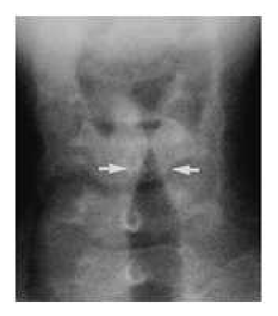
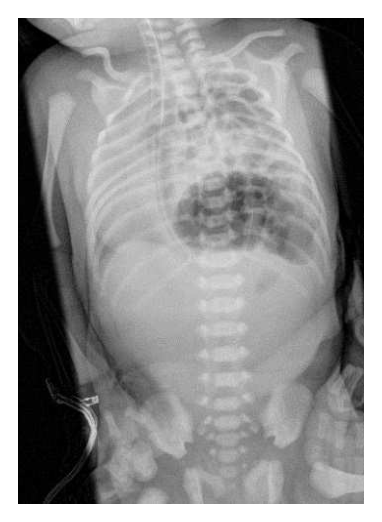
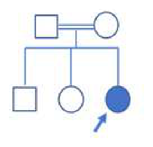
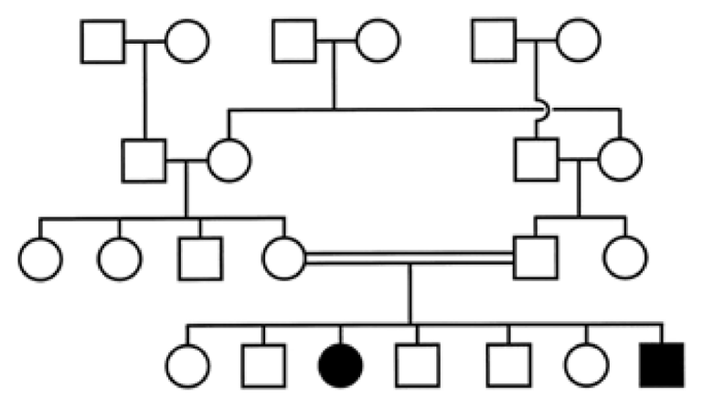
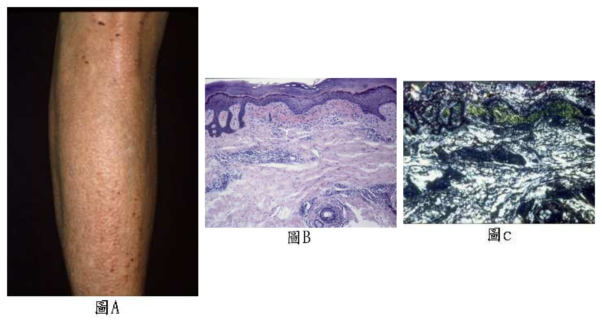
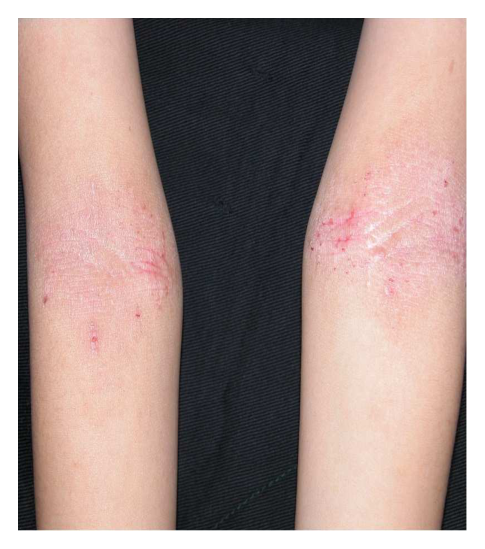
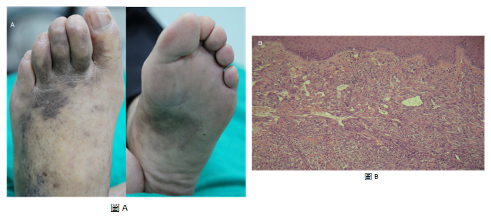

開卷有益 ／
醫師 ／ 醫學（四）（包括小兒科、皮膚科、神經科、精神科等科目及其相關臨床實例與醫學倫理） ／ 108 年第 1 次108 年第 1 次醫師醫學（四）（包括小兒科、皮膚科、神經科、精神科等科目及其相關臨床實例與醫學倫理）試題與答案
這一頁是民國 108 年第 1 次醫師醫學（四）（包括小兒科、皮膚科、神經科、精神科等科目及其相關臨床實例與醫學倫理）的整份歷屆試題，共 80 題，題目與標準答案出自考選部「國家考試試題及測驗式試題答案」開放資料，其中 80 題附有詳解。以下逐題列出題幹、選項與答案；要計時作答或記錄成績，請用線上練習。
考選部原始場次代碼：108030
線上作答這一科 →
全部 80 題
第 1 題
2歲男童半夜因發燒及呼吸窘迫被帶⾄急診求診，問診有Hoarseness和Barking cough的症狀，聽診有Stridor，X光檢查如附圖，下列敘述何者錯誤？

（A） ⽩⾊箭頭標⽰稱為尖塔徵象（Steeple sign）（B） 此病的診斷最可能為哮吼（Croup）（C） 急性期可先給與氧氣及Epinephrine混合⽣理食鹽⽔以吸入⽅式治療（D） 此疾病最常⾒的病原為腸病毒（Enterovirus）答案：（D）
詳解與考點 正解：題幹的半夜發燒、聲音沙啞（hoarseness）、犬吠樣咳嗽（barking cough）與吸氣性喘鳴（stridor），合併附圖頸部正面 X 光可見聲門下氣道對稱性狹窄，形成尖塔徵象，典型為哮吼（croup）。哮吼最常見的病原是副流感病毒（parainfluenza virus），不是腸病毒（enterovirus），故錯誤敘述為 D。
A：圖中白色箭頭指向聲門下方逐漸變窄的氣柱影，外觀如尖塔，稱尖塔徵象（Steeple sign）；這是哮吼因聲門下黏膜水腫造成的典型影像表現，敘述正確。
B：哮吼常見於幼兒，臨床上以犬吠樣咳嗽、聲音沙啞及吸氣性喘鳴為特徵；本題症狀與聲門下狹窄影像相互吻合，診斷合理，故非錯誤選項。
C：急性哮吼應先評估呼吸窘迫與給予氧氣支持；中重度喘鳴可使用霧化 epinephrine 暫時減少氣道黏膜水腫，故此敘述為適當的急性處置方向，並非錯誤。
本題考點：哮吼（croup）是以上呼吸道、尤其聲門下區（subglottic region）發炎水腫為主的疾病；尖塔徵象（Steeple sign）是頸部正面 X 光所見的聲門下狹窄；常見病原為副流感病毒（parainfluenza virus），急性呼吸窘迫時可考慮氧氣支持與霧化 epinephrine。
第 2 題
第⼀次感染Epstein-Barr virus 所致之傳染性單核球增多症（Infectious mononucleosis），在急性期⾎清的EBV特異性抗體檢查結果，以下何者最為可能？
（A） anti-VCA IgM（-）、anti-VCA IgG（+）、anti-EBNA Ab NEA（+）（B） anti-VCA IgM（+）、anti-VCA IgG（+）、anti-EBNA Ab NEA（+）（C） anti-VCA IgM（+）、anti-VCA IgG（+）、anti-EBNA Ab NEA（-）（D） anti-VCA IgM（-）、anti-VCA IgG（-）、anti-EBNA Ab NEA（+）答案：（C）
詳解與考點 正解：第一次感染 EBV 所致傳染性單核球增多症的急性期血清抗體。急性感染時 anti-VCA IgM 出現，anti-VCA IgG 也可陽性；anti-EBNA 抗體通常在較晚期才出現，因此最可能為 anti-VCA IgM（+）、anti-VCA IgG（+）、anti-EBNA Ab NEA（-），故選 C。
A：anti-VCA IgM 陰性且 anti-EBNA 陽性較符合既往感染後的血清型態，無法代表急性初次感染。
B：anti-VCA IgM 與 IgG 同時陽性可見於急性期，但 anti-EBNA 陽性不符合典型急性感染的時間序列。
D：在 VCA 抗體都陰性的情況下單獨 anti-EBNA 陽性不合理，因 anti-EBNA 是較晚出現的抗體。
本題考點：EBV 血清學（EBV serology）——急性初次感染常為 anti-VCA IgM（+）、anti-VCA IgG（+）、anti-EBNA（-）；anti-EBNA 出現提示較晚期或既往感染。
第 3 題
下列何者是造成1歲健康兒童罹患急性細⽀氣管炎（Acute bronchiolitis）的最常⾒病原？
（A） ⼈類間質肺炎病毒（Human metapneumovirus）（B） 呼吸道融合病毒（Respiratory syncytial virus）（C） 副流感病毒（Parainfluenza）（D） 肺炎披衣菌（Chlamydia pneumoniae）答案：（B）
詳解與考點 正解：1 歲健康兒童急性細支氣管炎最常見病原。呼吸道融合病毒（respiratory syncytial virus, RSV）是嬰幼兒細支氣管炎最常見的病原，故選 B。
A：人類間質肺炎病毒可造成細支氣管炎，但盛行率不及 RSV，故非最常見。
C：副流感病毒較常與哮吼等上呼吸道疾病相關，也可造成下呼吸道感染，但不是本題最常見病原。
D：肺炎披衣菌可引起呼吸道感染，但不是健康 1 歲兒童急性細支氣管炎的典型最常見原因。
本題考點：急性細支氣管炎（acute bronchiolitis）——呼吸道融合病毒（RSV）是嬰幼兒最常見病原；其他呼吸道病毒雖可致病，考題中的「最常見」指向 RSV。
第 4 題
有關兒童社區性細菌性肺炎之併發症，下列何者最不常⾒？
（A） 腦膜炎（Meningitis）（B） ⼼包膜炎（Pericarditis）（C） 膿胸（Empyema）（D） 肋膜積⽔（Pleural effusion）答案：（A）
詳解與考點 正解：兒童社區性細菌性肺炎的併發症中「最不常見」者。肋膜積水與膿胸是肺炎直接鄰近胸膜的常見併發症，心包膜炎雖少見仍可由鄰近感染延伸；腦膜炎屬遠端中樞神經感染，作為肺炎併發症最不常見，故選 A。
B：心包膜炎不是常見併發症，但可因嚴重細菌感染或鄰近發炎而發生，故不如腦膜炎不常見。
C：膿胸是細菌性肺炎的重要局部併發症，常與肋膜腔感染及積液相關，故不是答案。
D：肋膜積水是兒童細菌性肺炎較常見的胸腔併發症，並可進一步演變為膿胸，故不是答案。
本題考點：兒童社區性細菌性肺炎（community-acquired bacterial pneumonia）的併發症——肋膜積水（pleural effusion）與膿胸（empyema）屬常見局部併發症；腦膜炎（meningitis）並非典型直接胸腔併發症。
第 5 題
下列何種肝炎病毒不會經由周產期（Perinatal）傳染？
（A） A型肝炎病毒（Hepatitis A virus）（B） B型肝炎病毒（Hepatitis B virus）（C） C型肝炎病毒（Hepatitis C virus）（D） D型肝炎病毒（Hepatitis D virus）答案：（A）
詳解與考點 正解：肝炎病毒是否會經周產期傳染。A 型肝炎主要經糞口途徑傳播，並非典型的周產期傳染病毒；相對地，B 型、C 型與 D 型肝炎病毒可有母子垂直傳播的情境，故選 A。
B：B 型肝炎病毒可在生產前後傳給嬰兒，是周產期傳染評估與新生兒預防的重要病原，故不是答案。
C：C 型肝炎病毒可發生母子垂直傳播，雖機率受母體病毒量及共病等因素影響，仍不是「不會」周產期傳染。
D：D 型肝炎病毒須依賴 B 型肝炎病毒存在；在母體有相關感染背景時仍可涉及垂直傳播，故不能選為不會周產期傳染者。
本題考點：病毒性肝炎傳播途徑（transmission of viral hepatitis）——A 型肝炎（HAV）以糞口傳播為主；B 型、C 型及依賴 HBV 的 D 型肝炎須考量母子垂直傳播。
第 6 題
滿周歲的幼兒不適合接種下列何種疫苗？
（A） ⽔痘疫苗（B） A型肝炎疫苗（C） 輪狀病毒疫苗（D） 肺炎鏈球菌疫苗答案：（C）
詳解與考點 正解：「滿周歲」；輪狀病毒疫苗是嬰兒早期口服疫苗，接種有明確的年齡上限，1歲才開始已不適合接種，故選 C。
A：水痘疫苗可在滿1歲後開始接種，年齡符合本題情境。
B：A型肝炎疫苗可於滿1歲後接種，並非年滿1歲的不適用疫苗。
D：肺炎鏈球菌疫苗可依兒童常規或補接種時程施打；年滿1歲不是禁忌。
本題考點：疫苗接種時程（immunization schedule）；輪狀病毒疫苗（rotavirus vaccine）須在嬰兒期的規定年齡窗內完成，不能延至周歲後才起始。
第 7 題
剛出⽣的34週⼤的嬰兒，嘴⾓⼀直流⼝⽔並冒出泡泡，值班醫師無法順利將⿐胃管放入。出⽣12⼩時後KUB發現無腸氣，下列那個診斷最有可能？
（A） 單純食道氣管瘻管（B） 食道閉鎖合併上段食道氣管瘻管（C） 食道閉鎖合併下段食道氣管瘻管（D） 食道閉鎖合併上段及下段食道氣管瘻管答案：（B）
詳解與考點 正解：口吐泡沫且鼻胃管無法通過提示食道閉鎖；腹部 X 光完全無腸氣，表示空氣沒有經由瘻管進入胃腸道，最符合食道閉鎖合併上段食道氣管瘻管，故選 B。
A：單純食道氣管瘻管並無食道閉鎖，鼻胃管通常可進入胃內，與本題不符。
C：食道閉鎖合併下段瘻管時，氣管空氣會經下段瘻管進入胃腸道，腹部應可見腸氣；這是最強誘答，但與「無腸氣」相反。
D：上下段皆有瘻管仍可由下段瘻管使空氣進入胃腸道，故不會呈現無腸氣。
本題考點：食道閉鎖與氣管食道瘻管（esophageal atresia and tracheoesophageal fistula）；鼻胃管無法通過與腹部腸氣有無，可定位瘻管是否通向食道下段。
第 8 題
⼀個G1P1 / 39週出⽣體重3,200公克的新⽣兒，出⽣後哺餵全⺟乳。第19個⼩時⼤時檢測總膽紅素值為12mg/dL、直接型膽紅素值為0.22 mg/dL。⺟親為O型Rh陽性、⽗親B型Rh陽性⾎型。⺟親之前未曾接受過任何⾎品輸注。⽗親有⼄型海洋性貧⾎、⺟親則無海洋性貧⾎。下列何者為最可能之診斷？
（A） Rh其他⾎型不合（Rh minor group incompatibility）（B） ABO⾎型不合（ABO incompatibility）（C） ⺟乳性黃疸（Breast milk jaundice）（D） ⼄型海洋性貧⾎（ß-Thalassemia）答案：（B）
詳解與考點 正解：出生僅19小時即有總膽紅素12 mg/dL、直接膽紅素僅0.22 mg/dL，屬早發的非結合型黃疸。母親 O 型、父親 B 型，使嬰兒可能為 B 型而發生 ABO 血型不合造成溶血，故選 B。
A：母親 Rh 陽性且無輸血史，缺少 Rh 次群同種免疫的病史線索；相較之下 O 型母親與 B 型父親的組合直接支持（B）ABO 不合。
C：母乳性黃疸多在出生後較晚才明顯，不能解釋出生第1日即顯著上升的膽紅素。
D：β 地中海型貧血在新生兒期因胎兒血紅素比例高，通常不以這種出生首日黃疸表現。
本題考點：新生兒黃疸（neonatal jaundice）；ABO 血型不合（ABO incompatibility）可造成出生早期的免疫性溶血與非結合型高膽紅素血症。
第 9 題
新⽣兒出⽣後即有呼吸窘迫、唇⾊發紫、胸部較腹部來得⾼突的現象。⾝體診察發現最⼤⼼⾳在右側。胸腹部X光片如附圖，最有可能的診斷為何？

（A） 張⼒性氣胸（Tension pneumothorax）（B） 食道閉鎖（Esophageal atresia）（C） ⼗⼆指腸閉鎖（Duodenal atresia）（D） 橫膈膜疝氣（Diaphragmatic hernia）答案：（D）
詳解與考點 正解：新生兒出生即出現呼吸窘迫、發紺、胸部較腹部高突，且最大心音位於右側；X光可見左側胸腔內有多個含氣腸管陰影，心縱隔結構被推向右側，符合腹腔臟器經橫膈缺損進入胸腔的先天性橫膈膜疝氣（congenital diaphragmatic hernia）。疝入胸腔的腸管壓迫同側肺臟並造成縱隔偏移，因而導致嚴重呼吸窘迫，故選 D。
A：張力性氣胸會使患側胸腔呈現無肺紋理的過度透亮影，肺臟受壓塌陷並可推移縱隔；本圖則是胸腔內可辨識多個腸管氣體陰影，並非單純胸腔積氣，故不符。
B：食道閉鎖（esophageal atresia）常見無法進食、流涎及鼻胃管無法通過；X光可見鼻胃管在上段食道捲曲，若合併遠端氣管食道瘻可有腹部腸氣，但不會造成腸管進入胸腔與心臟右移，故不符。
C：十二指腸閉鎖（duodenal atresia）的典型影像是上腹部的雙氣泡徵象（double-bubble sign），代表胃與近端十二指腸擴張；其腸氣位置在腹腔，無法解釋本圖左胸腔腸管陰影、腹部相對凹陷及右移的心音位置，故不符。
本題考點：先天性橫膈膜疝氣（congenital diaphragmatic hernia）多因後外側橫膈缺損使腹腔臟器疝入胸腔；胸部X光的胸腔腸管氣影與縱隔偏移是重要線索；肺發育不全（pulmonary hypoplasia）是新生兒呼吸窘迫的主要機轉。
第 10 題
比較先天性巨結腸症（Hirschsprung disease, HD）和功能性便秘（Functional constipation, FC）各種症狀出現之機率，下列敘述何者錯誤？
（A） ⼤便失禁（Encopresis）：HD＞FC（B） ⽣⻑遲緩（Failure to thrive）：HD＞FC（C） ⼩腸結腸炎（Enterocolitis）：HD＞FC（D） 腹漲（Abdominal distention）：HD＞FC答案：（A）
詳解與考點 正解：本題問錯誤敘述。功能性便秘常因糞便滯留、直腸擴張而出現溢流性大便失禁；先天性巨結腸症較典型的是出生早期排便困難與腹脹，故「HD>FC」的（A）敘述錯誤，選 A。
B：生長遲緩較支持器質性的先天性巨結腸症，而非一般功能性便秘，故此比較正確。
C：腸結腸炎是先天性巨結腸症的重要併發症，在功能性便秘較少見，故此敘述正確。
D：腹脹反映遠端腸道阻塞與糞便滯留，在先天性巨結腸症較常見，故非答案。
本題考點：先天性巨結腸症（Hirschsprung disease）；功能性便秘（functional constipation）；溢流性大便失禁（encopresis）較常見於長期功能性糞便滯留。
第 11 題
下列何種腸胃道息⾁（Polyps）發⽣⼤腸癌（Colon cancer）的風險最⾼？
（A） 幼年性息⾁症（Juvenile polyposis）（B） 家族性結直腸息⾁症（Familial adenomatous polyposis）（C） Peutz-Jeghers症候群（Peutz-Jeghers syndrome）（D） Cowden症候群（Cowden syndrome）答案：（B）
詳解與考點 正解：家族性腺瘤性息肉症會在大腸形成大量腺瘤，若未治療，累積的大腸癌風險極高，因此四者中以（B）最高，故選 B。
A：幼年性息肉症確有腸胃道惡性腫瘤風險，但其典型息肉為錯構瘤性，整體大腸癌風險不如（B）家族性腺瘤性息肉症。
C：Peutz-Jeghers 症候群會增加多種腫瘤風險，看似也很危險；但本題比較的是發生大腸癌的最高風險，仍以大量腺瘤的（B）最具代表性。
D：Cowden 症候群可伴隨多器官腫瘤風險，並非以最高的大腸癌風險為主要特徵。
本題考點：家族性腺瘤性息肉症（familial adenomatous polyposis, FAP）；腺瘤－癌序列（adenoma-carcinoma sequence）；遺傳性腸胃道息肉症候群的癌症風險比較。
第 12 題
1歲⼤女嬰因為每天解綠黏⾎絲便2⾄3次，間斷式體溫上升⾄38℃已經2天，體重從10公⽄降⾄9.8公⽄，給與腹瀉藥物和飲食控制。3天後⾎絲便減⾄每天1次，⼤便培養為非傷寒沙⾨⽒桿菌（NontyphoidalSalmonella）感染，此時體溫37.5℃，體重為9.7公⽄，精神及活動⼒正常，下列處置何者最為恰當？
（A） 應給與電解質⼝服液或稀飯等清淡飲食，開給⼝服抗⽣素治療⾄少7天（B） 應住院打點滴並禁食，給與靜脈抗⽣素治療⾄少7天（C） 應給與電解質⼝服液或稀飯等清淡飲食，無需給與⼝服抗⽣素（D） 應該住院打點滴並禁食，無需給與抗⽣素答案：（C）
詳解與考點 正解：患童已退燒、精神活動力正常、血便正在改善，體重僅輕度下降，屬可門診補液追蹤的非傷寒沙門氏菌腸炎。以口服電解質液或清淡飲食補充水分，通常不需抗生素，故選 C。
A：抗生素不是一般健康、病情改善中的非傷寒沙門氏菌腸炎常規處置，可能延長帶菌狀態，故不宜只因糞便培養陽性就給藥。
B：目前無休克、無活動力下降或無法口服的證據，住院禁食與靜脈抗生素過度處置。
D：不必抗生素的方向正確，但患童可口服且狀況穩定，不需要住院、點滴及禁食。
本題考點：非傷寒沙門氏菌腸炎（nontyphoidal Salmonella gastroenteritis）；口服補液治療（oral rehydration therapy）；抗生素保留給重症、侵襲性感染或特定高風險族群。
第 13 題
有關副食品添加的原則，下列何者最不適當？
（A） ⺟乳哺餵的孩⼦到6個⽉⼤時必須添加（B） 有過敏體質的嬰兒宜延後到8個⽉⼤時添加（C） 1歲以下嬰兒避免餵食蜂蜜（D） 每次只添加⼀種新食物，由少量開始，逐漸增加，觀察4⾄7天答案：（B）
詳解與考點 正解：本題問最不適當。嬰兒有過敏體質並不是延後至8個月才添加副食品的理由；延遲引入一般食物未被證明可預防過敏，故選 B。
A：嬰兒約6個月時單靠母乳已難完全供應成長所需營養，開始添加副食品是合理原則。
C：1歲以下應避免蜂蜜，以降低嬰兒肉毒桿菌中毒風險，敘述適當。
D：一次引入一種新食物、由少量漸增並觀察反應，有助辨識不良反應，屬實務上合宜的添加方式。
本題考點：副食品添加（complementary feeding）；食物過敏預防（food allergy prevention）；過敏高風險嬰兒不應以無依據的延後添加作為常規策略。
第 14 題
關於純⺟乳哺育之嬰幼兒的衛教指導，下列敘述何者最正確？
（A） ⿎勵純⺟乳哺育⾄嬰兒12個⽉⼤（B） 純⺟乳哺餵之嬰兒維⽣素K可能不⾜，6個⽉後須額外補充（C） 純⺟乳哺育的嬰兒，在出⽣後6個⽉內無需補充氟（D） 早產兒純⺟乳哺餵時鐵質可能不⾜，須額外補充；⾜⽉兒則會⾜夠，無需額外補充答案：（C）
詳解與考點 正解：出生後6個月內的純母乳哺餵嬰兒通常不需額外補充氟；氟補充須視飲水含氟量與長牙後的齲齒風險評估，故（C）最正確。
A：建議持續哺乳可超過12個月，但「純母乳」通常是約前6個月；6個月後應合併副食品，故此敘述不精確。
B：新生兒常規接受的是出生後的維生素 K 預防，不是純母乳嬰兒到6個月後常規補充維生素 K。
D：早產兒鐵儲存較少而常須補鐵；足月純母乳嬰兒的鐵儲存也會隨成長消耗，不能概括說永遠足夠、不需評估補充。
本題考點：純母乳哺餵（exclusive breastfeeding）；氟化物補充（fluoride supplementation）；嬰兒營養補充須區分維生素 K、鐵與氟的適應情境。
第 15 題
10歲女童學校尿液篩檢發現有⾎尿。主訴在上呼吸道感染後⼀兩天就會有⾁眼可見的⾎尿。詢問病史發現她的舅舅於國三時，因末期腎臟病開始接受透析治療。病童尿液常規檢查顯⽰潛⾎反應（Occult blood）：強陽性（3+）；蛋⽩質（Protein）：100 mg/dL；⽩⾎球（WBC） 3-5/HPF；紅⾎球（RBC） 100～150/HPF。下列何者為最可能之診斷？
（A） 局部巢狀腎絲球硬化（Focal segmental glomerulosclerosis）（B） 家族性薄基底膜疾病（Familial thin basement membrane disease）（C） ⾼鈣尿（Hypercalciuria）（D） Alport症候群（Alport syndrome）答案：（D）
詳解與考點 正解：反覆血尿、輕度蛋白尿與家族中男性青少年即進展為末期腎臟病，提示遺傳性腎絲球基底膜疾病。Alport 症候群可呈 X 連鎖遺傳並進展至腎衰竭，故選 D。
A：局部節段性腎絲球硬化較以顯著蛋白尿或腎病症候群表現，不能優先解釋此家族性的反覆血尿。
B：家族性薄基底膜疾病也可有家族性血尿，看似相近；但多為良性、較少在青少年進展為末期腎臟病，與舅舅病史不符。
C：高鈣尿可造成血尿，但不會典型地造成此種腎衰竭家族史與蛋白尿線索。
本題考點：Alport 症候群（Alport syndrome）；遺傳性腎炎（hereditary nephritis）；家族性血尿需以腎功能惡化的家族史區分薄基底膜腎病。
第 16 題
3歲的女童因全⾝⽔腫，體重增加2公⽄就診。體表⾯積Body surface area （BSA）為0.5m2，實驗檢查發現蛋⽩尿4+，24⼩時蛋⽩尿為3.3gm，單次尿液檢查：尿蛋⽩（Urine protein） 250 mg/dL，尿肌酸酐（Urinecreatinine）50 mg/dL，⾎中⽩蛋⽩為1.5 gm/dL，膽固醇：420 mg/dL，三酸⽢油脂：248 mg/dL，下列相關敘述何者錯誤？
（A） 應立即以Statin類降⾎脂藥物治療⾼⾎脂（B） ⼀般是原發性，不⽤腎臟切片，可先⽤類固醇治療（C） 蛋⽩尿的量已達到Nephrotic range proteinuria的定義（D） 若患者對類固醇反應良好則預後好，很少會進展到慢性腎臟病⽽須透析治療答案：（A）
詳解與考點 正解：全身水腫、低白蛋白血症與高脂血症符合腎病症候群。24小時蛋白尿3.3 g，換算為3.3/0.5=6.6 g/m2/day；尿蛋白／肌酸酐比為250/50=5 mg/mg，皆達腎病範圍。高脂血症是繼發現象，通常不能因此立即使用 statin，故錯誤的是 A。
B：此年齡常見原發性腎病症候群；典型表現可先以類固醇治療，並非人人起初都需腎切片。
C：無論以24小時體表面積校正或尿蛋白／肌酸酐比判讀，蛋白尿均已達 nephrotic range proteinuria，敘述正確。
D：對類固醇反應良好的兒童通常預後佳，進展至慢性腎臟病與透析的機率低，敘述正確。
本題考點：腎病症候群（nephrotic syndrome）；腎病範圍蛋白尿（nephrotic range proteinuria）；蛋白尿可用24小時排泄量或尿蛋白／肌酸酐比評估。
第 17 題
⼀個正常孩童可以不扶東⻄單腳站立10秒、能照樣式畫圓圈、能表達「你的」「我的」，其發展年齡最接近下列何者範圍？
（A） 滿2歲但未滿3歲（B） 滿3歲但未滿4歲（C） 滿4歲但未滿5歲（D） 滿5歲但未滿6歲答案：（B）
詳解與考點 正解：官方答案為 B；惟題幹的「不扶物單腳站立 10 秒」在常用發展里程碑通常較接近 5 歲，而照樣畫圓圈及使用「你的」「我的」則較接近 3 歲。若題幹確為 10 秒，三項能力的年齡訊息彼此不一致，不能僅據此肯定 B。
A：2 歲兒童可開始跑跳與簡單組合詞，但穩定單腳站立 10 秒及代名詞運用通常尚未成熟。
C：4 歲兒童的精細動作與語言通常更進一步；然而單腳站立 10 秒又可能較接近此年齡之後，故不能單憑題幹排除。
D：5 歲兒童可有較成熟的平衡能力；題幹的單腳站立 10 秒支持較晚年齡，但畫圓與代名詞又偏早，形成命題爭點。
本題考點：兒童發展篩檢（developmental surveillance）——粗大動作（gross motor）、精細動作（fine motor）與語言（language）里程碑應綜合判讀；單腳站立持續時間須留意所採量表與年齡範圍。
第 18 題
下列關於熱性痙攣之敘述，何者正確？
（A） 複雜型熱性痙攣之病⼈，未來發⽣癲癇的機會與⼀般族群相同（B） 年紀⼩於6個⽉之熱性痙攣患者，須做腰椎穿刺排除中樞神經感染之可能性（C） ⾸次發⽣單純型熱性痙攣，⼤多須安排神經影像檢查以排除腦部構造異常（D） 熱性痙攣之發⽣與基因或家族史無關答案：（B）
詳解與考點 正解：6個月以下嬰兒出現伴發燒的痙攣，不能直接視為典型熱性痙攣，須積極排除腦膜炎、腦炎等中樞神經感染；腰椎穿刺是重要評估，故選 B。
A：複雜型熱性痙攣未來癲癇風險高於一般族群，故不能說相同。
C：首次單純型熱性痙攣若神經學檢查正常，通常不需常規神經影像；此選項看似謹慎，卻是過度檢查。
D：熱性痙攣與遺傳傾向及家族史有關，故「無關」錯誤。
本題考點：熱性痙攣（febrile seizure）；中樞神經感染（central nervous system infection）；非典型年齡或臨床警訊時需優先評估感染病因。
第 19 題
關於女童性早熟（Precocious puberty），下列那⼀項的致病機轉與其他最不相同？
（A） 環境荷爾蒙接觸（Exogenous estrogens）（B） 先天性腎上腺增⽣（Congenital adrenal hyperplasia）（C） 早期McCune-Albright⽒症候群（McCune-Albright syndrome, early）（D） 下視丘錯構瘤（Hypothalamic hamartoma）答案：（D）
詳解與考點 正解：題目比較性早熟的機轉。下視丘錯構瘤會過早活化下視丘－腦下垂體－性腺軸，造成中樞性性早熟；其餘三項主要是性腺軸以外的性類固醇作用或生成，故最不同的是 D。
A：外源性雌激素直接造成周邊性雌激素暴露，不是中樞軸提早啟動。
B：先天性腎上腺增生造成腎上腺雄性素過多，屬周邊性性早熟機轉。
C：早期 McCune-Albright 症候群因性腺自主性激素分泌造成周邊性性早熟，與（D）不同。
本題考點：中樞性性早熟（central precocious puberty）；周邊性性早熟（peripheral precocious puberty）；下視丘錯構瘤（hypothalamic hamartoma）是中樞軸活化的典型原因。
第 20 題
先天性腎上腺增⽣（Congenital adrenal hyperplasia）為⼀群因酵素缺乏⽽導致⽪質醇製造不⾜的疾病，下列何種型別盛⾏率最⾼？
（A） 21-hydroxylase deficiency, nonclassic type（B） 11β-hydroxylase deficiency（C） 3β-hydroxysteroid dehydrogenase deficiency, classic type（D） 17α-hydroxylase/17,20-lyase deficiency答案：（A）
詳解與考點 正解：先天性腎上腺增生中，以21-hydroxylase deficiency 最常見；其中 nonclassic type 表現可較晚、族群盛行率也最高，故選 A。
B：11β-hydroxylase deficiency 亦可造成皮質醇不足與雄性素過多，但遠少於21-hydroxylase deficiency。
C：3β-hydroxysteroid dehydrogenase deficiency 屬罕見型別，不是最常見原因。
D：17α-hydroxylase/17,20-lyase deficiency 罕見，典型為性類固醇不足與礦物皮質素相關表現，盛行率不及（A）。
本題考點：先天性腎上腺增生（congenital adrenal hyperplasia）；21-hydroxylase deficiency 是最常見的酵素缺陷，須與較罕見的其他類型區分。
第 21 題
有關類過敏性紫斑症（Henoch-Schönlein Purpura）的敘述，下列何者最為適切？
（A） 是⼀個以IgE為主的過敏反應（B） ⼤多數病⼈需使⽤類固醇治療（C） 因有⽪膚的症狀，須局部治療（D） 注意是否合併腹痛、關節痛、⾎尿答案：（D）
詳解與考點 正解：類過敏性紫斑症是 IgA 血管炎，除可觸及紫斑外，臨床上須評估腹痛、關節痛及血尿等腸胃、關節、腎臟侵犯，因此（D）最適切，故選 D。
A：其主要免疫沉積為 IgA，而非 IgE 主導的立即型過敏反應。
B：多數患者可支持性治療並自行緩解；類固醇保留給特定較嚴重症狀，非大多數人都必需。
C：皮疹是全身性小血管炎的表現，不能只以局部皮膚治療取代內臟侵犯評估。
本題考點：IgA 血管炎（IgA vasculitis）；Henoch-Schönlein purpura；四大表現為紫斑、關節症狀、腹部症狀與腎臟侵犯。
第 22 題
1歲6個⽉的男孩因為連續發燒6天⽽來就診，下列那⼀個臨床表徵最不像川崎⽒症（Kawasaki disease）的臨床表徵？
（A） 草莓舌且嘴唇紅腫⿔裂（B） 軟顎與扁桃腺出現⽔泡與潰瘍（C） 頸部淋巴結腫⼤（D） 雙眼結膜發炎答案：（B）
詳解與考點 正解：川崎氏症的口腔表現是嘴唇紅裂、口腔黏膜充血與草莓舌，但通常不會有水泡或潰瘍。軟顎與扁桃腺水泡、潰瘍較提示病毒性咽口炎，故最不像川崎氏症的是 B。
A：草莓舌及嘴唇紅腫龜裂是川崎氏症典型黏膜表徵。
C：頸部淋巴結腫大是川崎氏症主要臨床表徵之一，雖非每位患者都有。
D：雙側非化膿性結膜炎是常見而重要的川崎氏症表現。
本題考點：川崎氏症（Kawasaki disease）；黏膜皮膚淋巴結症候群（mucocutaneous lymph node syndrome）；口腔潰瘍或滲出性咽炎反而應考慮其他感染。
第 23 題
2歲的⼩朋友，昨晚飯後跑動玩耍時突然持續咳嗽，今天到急診，發現呼吸聲⾳變得明顯，聽診有單側喘息⾳（Wheezing），給與短效型⽀氣管擴張劑（Bronchodilator）後，喘息⾳沒有改變，下列何者為最可能之診斷？
（A） 上呼吸道感染（Upper respiratory tract infection）（B） 細⽀氣管炎（Bronchiolitis）（C） 氣喘（Asthma）（D） 氣道異物阻塞（Airway foreign body obstruction）答案：（D）
詳解與考點 正解：飯後跑動時突然持續咳嗽、單側喘鳴且支氣管擴張劑無效，是吸入異物造成局部氣道阻塞的典型線索，故選 D。
A：上呼吸道感染多有鼻炎、咽痛等前驅症狀，通常不會在單一事件後造成固定單側喘鳴。
B：細支氣管炎多為病毒感染後的雙側瀰漫性喘鳴與呼吸窘迫，與突發單側所見不符。
C：氣喘也會喘鳴，看似相近；但氣喘通常為反覆或瀰漫性可逆氣流阻塞，給短效支氣管擴張劑多有改善，與本題相反。
本題考點：氣道異物阻塞（airway foreign body obstruction）；單側喘鳴（unilateral wheezing）；突發症狀與對支氣管擴張劑無反應是重要辨識線索。
第 24 題
有關預防嬰幼兒過敏的觀念，下列敘述何者最不恰當？
（A） 建議孕婦飲食不需避免⾼過敏食物（例如海鮮、花⽣等）（B） 建議在4～6個⽉⼤開始添加副食品（C） 尚未有國際指引建議嬰幼兒常規性使⽤益⽣菌來預防過敏（D） ⺟乳餵哺期間，⺟親需要避免食⽤⾼過敏食物答案：（D）
詳解與考點 正解：本題問最不恰當。哺乳期間母親不需為了預防嬰兒過敏而常規避免高過敏食物；無必要限制飲食反而可能影響營養，故選 D。
A：孕期也不建議為預防嬰兒過敏而常規避免海鮮、花生等食物，敘述適當。
B：在約4～6個月開始引入副食品，並依嬰兒發展與營養需求調整，是合理方向。
C：益生菌對預防過敏的證據與建議仍受菌種、族群及結果影響，並非所有嬰幼兒的常規預防措施，敘述可接受。
本題考點：食物過敏預防（food allergy prevention）；孕期與哺乳期母親飲食（maternal diet）；常規飲食迴避並非預防嬰兒過敏的標準作法。
第 25 題
有關漏⽃胸（Funnel chest）的描述，下列何者錯誤？
（A） 幼童因運動⽽出現症狀的比率較青少年低（B） 女孩發⽣的機率比男孩⾼（C） 肺功能檢查常⾒到阻塞性的異常（D） 美觀為⼿術的考量主因之⼀本題送分，無標準答案
詳解與考點 本題官方公告送分。
第 26 題
有關肝病病童疑似猛爆性肝衰竭（Fulminant liver failure）之實驗室診斷數據評估和相關處置，下列何者正確？
（A） 可由⾎清轉胺酶Aspartate aminotransferase（AST）、Alanine aminotransferase（ALT）之數值⾼低判斷猛爆性肝衰竭的嚴重度（B） 若⾎清⽩蛋⽩（Serum albumin）數值低下，加上超⾳波發現有腹⽔，治療⾸先應給與⽩蛋⽩輸注，並給與維持性點滴輸液（C） 若凝⾎酶原時間（Prothrombin time）和部分凝⾎活酶時間（Activated partial thromboplastin time）延⻑，應給與維⽣素K以提升肝臟合成凝⾎因⼦II, VII, IX, X（D） 對於有昏睡或意識障礙的肝病病童，若⾎氨（Ammonia）已經上升且合併第⼆期肝腦病變（Hepaticencephalopathy Stage II）之意識混淆及嗜睡，應立即插管使⽤呼吸器答案：（C）
詳解與考點 正解：肝病病童若凝血時間延長，應先考慮維生素 K 缺乏是否參與，給予維生素 K 可作為校正可逆因素的處置；維生素 K 是凝血因子 II、VII、IX、X 生成所需輔因子，故選 C。
A：AST、ALT 反映肝細胞受損，數值高低不等同肝臟合成功能與猛爆性肝衰竭嚴重度；凝血功能與意識狀態更重要。
B：低白蛋白與腹水的處置須依血流動力、腎功能與腹水原因整體評估，不能一律把白蛋白輸注加維持液當作第一線處置。
D：肝腦病變第 II 期雖須密切監測及預作氣道保護準備，但「應立即插管」過度絕對；是否插管仍取決於意識惡化、無法保護氣道等臨床狀況。
本題考點：猛爆性肝衰竭（fulminant liver failure）；凝血功能（coagulation function）；維生素 K（vitamin K）可用於評估與處理可逆的凝血因子生成障礙。
第 27 題
2天⼤的⾜⽉新⽣兒，接受例⾏性的⾎氧篩檢時發現雙側下肢的⾎氧飽和度是90%，右⼿⾎氧飽和度是98%， 最有可能是下列那⼀種先天性⼼臟病？
（A） 完全型動脈幹（Complete truncus arteriosus）（B） 主動脈⼸窄縮合併開放性動脈導管（Coarctation of the aorta with patent ductus arteriosus）（C） 法洛⽒四重症（Tetralogy of Fallot）（D） 極端型肺動脈瓣狹窄合併開放性動脈導管（Critical pulmonary valve stenosis with patent ductusarteriosus）答案：（B）
詳解與考點 正解：右手血氧飽和度 98%、雙下肢僅 90%，形成上肢較高、下肢較低的差異性發紺（differential cyanosis）。主動脈弓窄縮合併開放性動脈導管時，導管位於窄縮處遠端，右心輸出的低氧血可經導管流入降主動脈，優先供應下半身；右手由主動脈弓近端供血，飽和度較高，故選 B。
A：完全型動脈幹使全身與肺循環血液在共同動脈幹混合，通常造成較均一的發紺或心衰竭表現，無法特別解釋右手與雙下肢的飽和度差異。
C：法洛氏四重症的右向左分流會造成全身性發紺；它看似也能造成低血氧，但不會典型地只讓導管前的右手飽和度高於導管後的下肢。
D：極端型肺動脈瓣狹窄合併開放性動脈導管時，導管主要供應肺血流，低氧血混合後影響的是全身動脈血，較不會產生本題明顯的導管前、後飽和度差。
本題考點：差異性發紺（differential cyanosis）——比較右手的導管前（preductal）與下肢的導管後（postductal）血氧可辨識導管依賴性左心阻塞病變；主動脈弓窄縮（coarctation of the aorta）合併開放性動脈導管（patent ductus arteriosus）可使下半身接受較低氧的血流。
第 28 題
學齡前的兒童常會被聽到無意義（Innocent）、良性（Benign）、或稱作功能性（Functional）的⼼雜⾳（Heart murmur）。下列那⼀種⼼雜⾳的特徵不太可能是這類型的⼼雜⾳？
（A） ⼼雜⾳的強度達第4級（B） ⼼雜⾳的強度會隨著姿勢與呼吸⽽改變（C） ⼼雜⾳僅僅在收縮期出現（D） 第⼆⼼⾳會因吸氣⽽出現分岔的情形（S2 split）答案：（A）
詳解與考點 正解：「無意義／良性／功能性」心雜音；這類雜音通常音量低、短暫、局限於收縮期，且會隨姿勢、呼吸或心輸出量改變。強度達第 4 級代表可觸及震顫（thrill）的明顯雜音，應懷疑器質性心臟病，故最不可能是（A），選 A。
B：功能性心雜音常因體位、呼吸與血流速度改變而增減，這種變動性正是其常見特徵，故非答案。
C：功能性心雜音多為收縮期噴射性雜音；舒張期或全收縮期雜音才較需警覺病理性病灶，因此此敘述可符合。
D：吸氣時右心回流增加，可出現生理性第二心音分裂（physiologic S2 split），這是正常生理現象，不能據此判定為病理性心雜音。
本題考點：功能性心雜音（innocent murmur）——常為低分級、收縮期且隨生理狀態變動；心雜音分級（murmur grading）——第 4 級以上合併可觸及震顫，須優先排除器質性心臟病。
第 29 題
在下列那⼀種狀況之下給與⼀個患有先天性⼼臟病的新⽣兒使⽤前列腺素E1（Prostaglandin E1）維持動脈導管（Ductus arteriosus）的開放對病情最沒有幫助？
（A） 上⼼臟型全肺靜脈回流異常合併阻塞（Supracardiac type total anomalous pulmonary venous return withobstruction）（B） 嚴重主動⼸窄縮（Coarctation of the aorta）（C） 肺動脈瓣閉鎖且無⼼室中膈缺損（Pulmonary atresia with intact ventricular septum）（D） 左⼼發育不全症候群（Hypoplastic left heart syndrome）答案：（A）
詳解與考點 正解：前列腺素 E1（prostaglandin E1, PGE1）的作用是維持動脈導管開放，以支持導管依賴性的肺血流或體循環。上心臟型全肺靜脈回流異常合併阻塞的致命問題是肺靜脈回流受阻，血液無法順利回到左心；開放動脈導管不能解除這個阻塞，還可能增加肺血流與肺水腫，故最沒有幫助的是 A。
B：嚴重主動脈弓窄縮時，下半身體循環可依賴動脈導管由肺動脈獲得血流；（B）給予 PGE1 有助維持導管並改善灌流。
C：肺動脈瓣閉鎖合併完整心室中隔時，肺血流常仰賴動脈導管；（C）維持導管開放可讓主動脈血進入肺循環，故有幫助。
D：左心發育不全症候群的全身血流依賴右心經動脈導管供應降主動脈；（D）若導管關閉會造成嚴重體循環低灌流，PGE1 是重要的初始穩定措施。
本題考點：前列腺素 E1（prostaglandin E1）——用於維持動脈導管（ductus arteriosus）開放；導管依賴性心臟病（ductal-dependent heart disease）——須區分依賴導管的肺血流、體循環病變，與無法靠導管解除的肺靜脈回流阻塞。
第 30 題
3個⽉⼤的女嬰經診斷為體染⾊體隱性遺傳的Phenylketonuria，致病原因為缺乏Phenylalanine hydroxylase（PAH），其家族譜系如附圖。哥哥和姊姊分別為6歲和4歲⼤，無任何臨床症狀，發育發展皆正常。哥哥和姊姊帶有突變基因影響到PAH活性的機率為何？

（A） 分別是1/4，1/2（B） 皆為1/4（C） 皆為1/2（D） 皆為2/3答案：（D）
詳解與考點 正解：附圖顯示父母皆無症狀，但最小的女兒為患病個體。Phenylketonuria 為體染色體隱性遺傳，故父母必各帶有一個突變等位基因，基因型皆為 Aa。每一胎原始機率為 AA 1/4、Aa 1/2、aa 1/4；哥哥與姊姊均無症狀，已排除 aa，因此在剩下的 AA 與 Aa 中重新條件化，帶因者機率為 1/2÷(1/4+1/2)＝2/3。兩人各自皆為 2/3，故選 D。
A：此選項將兩位未患病手足給成不同機率，但在同一對 Aa 父母下，每胎遺傳機率相同；且已知兩人皆正常後，帶因機率皆應為 2/3，非 1/4 或 1/2。
B：1/4 是 Aa×Aa 配對下子代為完全正常非帶因者 AA 的機率，不是已知無症狀子女為帶因者的條件機率。
C：1/2 是未納入「無症狀」資訊前，任一子代為帶因者 Aa 的原始機率；排除患病的 aa 後，帶因者在正常子女中的比例提高為 2/3。
本題考點：體染色體隱性遺傳（autosomal recessive inheritance）中，患病子女 aa 可推知無症狀父母為帶因者 Aa；條件機率（conditional probability）須在已知手足未患病時排除 aa，正常手足為帶因者的機率為 2/3；苯丙酮尿症（phenylketonuria, PKU）與 Phenylalanine hydroxylase（PAH）缺乏。
第 31 題
有關臺灣現⾏的新⽣兒代謝異常篩檢，下列敘述何者錯誤？
（A） 剛出⽣的寶寶需⼀天內採腳跟⾎，滴在⾎片上，送新⽣兒篩檢中⼼檢查（B） Tandem mass spectrometry是⽬前最主要的篩檢⼯具（C） 篩檢的疾病以胺基酸、有機酸、脂肪酸代謝異常為主（D） 低體重兒、產程有併發症的寶寶比較會有偽陽性（False positive）的結果答案：（A）
詳解與考點 正解：題目問新生兒代謝異常篩檢的錯誤敘述，關鍵在採檢時機。足跟血乾血片篩檢須在出生後已有足夠餵食與代謝時間時採檢，並非所有剛出生嬰兒都必須在 1 天內立刻採血；太早採檢反而可能影響部分代謝疾病的偵測，因此（A）錯誤。此題涉及現行篩檢流程，採檢細節會依篩檢方案與新生兒狀況調整。
B：串聯式質譜儀（tandem mass spectrometry）可在一份乾血片同時分析多種代謝物，是新生兒胺基酸、有機酸與脂肪酸代謝異常篩檢的重要工具，故非答案。
C：多項新生兒代謝篩檢的核心確實涵蓋胺基酸、有機酸及脂肪酸氧化代謝異常，這是在（B）技術下可廣泛篩檢的疾病群。
D：早產、低出生體重、疾病壓力或治療因素可能改變代謝物濃度，增加偽陽性篩檢結果的機會；它看似是非特異性描述，但與實務上的追蹤複檢需求一致。
本題考點：新生兒篩檢（newborn screening）——以乾血片（dried blood spot）檢測先天代謝異常；串聯式質譜儀（tandem mass spectrometry）——可同時篩檢多類胺基酸、有機酸及脂肪酸代謝異常；篩檢前分析因素（preanalytical factors）——採檢時機與新生兒狀態會影響結果。
第 32 題
下列何種疾病最有可能以如附圖之⽅式遺傳？

（A） 軟骨發育不全（Achondroplasia）（B） 庫利⽒貧⾎（Cooley anemia）（C） 裘馨⽒肌⾁失養症（Duchenne muscular dystrophy）（D） 結節性硬化症（Tuberous sclerosis complex）答案：（B）
詳解與考點 正解：家系圖中男女皆可罹病，且最下代有兩名患病子女（實心圓與實心方形），其雙親則皆未患病；又可見近親婚配的雙線，符合帶因者近親婚配後生出患病子女的常染色體隱性遺傳（autosomal recessive inheritance）型態。庫利氏貧血（Cooley anemia，即重型 β 地中海型貧血）為常染色體隱性遺傳，故選 B。
A：軟骨發育不全（achondroplasia）通常是常染色體顯性遺傳（autosomal dominant inheritance），患者多有一名患病親代，並可見垂直傳遞；不符合本圖未患病雙親生出患病男女子女的型態。
C：裘馨氏肌肉失養症（Duchenne muscular dystrophy）為 X 連鎖隱性遺傳（X-linked recessive inheritance），主要影響男性；本圖有患病女性，且患病男女同胞同時出現在未患病父母所生子女中，較不符合其典型遺傳方式。
D：結節性硬化症（tuberous sclerosis complex）多為常染色體顯性遺傳（autosomal dominant inheritance），雖可因新生突變發生，但典型家系應見患者向下傳遞，與圖示的隱性遺傳模式不符。
本題考點：常染色體隱性遺傳（autosomal recessive inheritance）常見未患病帶因雙親生出患病子女，男女罹病機率相近，近親婚配會增加同一隱性致病等位基因相遇的機會；重型 β 地中海型貧血（Cooley anemia）是代表性疾病。
第 33 題
15歲男⽣，半夜睡覺突然左側睪丸劇痛，痛到臉⾊蒼⽩、冒冷汗，立即送到醫院急診。在缺乏超⾳波等影像檢查之下，下列何種檢查或治療較符合⼀般醫療現⾏常規？
（A） 抗⽣素治療（B） 睪丸切片（C） 睪丸探查⼿術（D） 睪丸切除⼿術答案：（C）
詳解與考點 正解：青春期男孩突發單側劇烈睪丸痛、蒼白與冒冷汗，須先視為睪丸扭轉（testicular torsion）。在缺乏可即時排除扭轉的影像檢查時，應緊急進行睪丸探查手術，直接確認扭轉、復位並評估血流與睪丸存活性；延誤會提高缺血壞死風險，故選 C。
A：抗生素可用於懷疑附睪炎等感染，但本題的突然劇痛與自律神經症狀更支持扭轉；先以（A）治療而延誤探查可能喪失保睪時機。
B：睪丸切片不處理缺血扭轉，且會延遲急症處置，並非此情境的優先檢查。
D：睪丸切除只在探查後確認睪丸已不可逆壞死時才可能需要；（D）看似能根治問題，卻不能在未探查、未判斷存活性前作為第一步。
本題考點：睪丸扭轉（testicular torsion）——青少年突發陰囊劇痛須高度懷疑；陰囊探查（scrotal exploration）——影像無法即時完成或臨床高度懷疑時，以緊急手術避免缺血性睪丸損傷。
第 34 題
有關脂漏性⽪膚炎（seborrheic dermatitis）的敘述，下列何者錯誤？
（A） 好發在頭⽪、眉⽑、⿐⼦兩側、⽿朵後⾯（B） 常發於嬰兒和成⼈（C） 外⽤抗黴菌藥物不能有效治療脂漏性⽪膚炎（D） 若是病程頑固且臨床表現不尋常，需留意HIV感染答案：（C）
詳解與考點 正解：脂漏性皮膚炎與皮屑芽孢菌（Malassezia）相關，外用抗黴菌藥可降低酵母菌負荷並改善發炎與脫屑。因此「不能有效治療」與疾病機轉及常用治療不符，錯誤的是 C。
A：頭皮、眉毛、鼻翼兩側及耳後是皮脂腺豐富區域，正是脂漏性皮膚炎常見分布，故正確。
B：脂漏性皮膚炎常見於嬰兒期與成人期，成人可呈反覆慢性病程，故此敘述正確。
D：嚴重、頑固或臨床表現異常的脂漏性皮膚炎，應思考免疫功能低下，包括 HIV 感染的可能性，故非答案。
本題考點：脂漏性皮膚炎（seborrheic dermatitis）——好發於皮脂腺豐富部位，與 Malassezia 及發炎反應相關；外用抗黴菌治療（topical antifungal therapy）——可作為控制脂漏性皮膚炎的治療選項。
第 35 題
關於類天疱瘡（bullous pemphigoid）的敘述，下列何者錯誤？
（A） 常發⽣於年輕⼈（B） 初期可以搔癢、蕁⿇疹樣的病灶表現（C） 病灶的病理組織檢查常⾒嗜伊紅球（eosinophil）浸潤（D） 治療藥物以⼝服⽪質類固醇和免疫抑制劑為主答案：（A）
詳解與考點 正解：類天疱瘡（bullous pemphigoid）是以高齡者為主要族群的自體免疫性水疱病，抗體攻擊表皮－真皮交界的基底膜帶成分。因此「常發生於年輕人」不符合典型流行病學，錯誤的是 A。
B：類天疱瘡初期可先有搔癢、濕疹樣或蕁麻疹樣斑塊，之後才出現緊繃性水疱，故此敘述正確。
C：組織病理常見表皮下水疱及嗜伊紅球浸潤，與（C）相符；這點也有助和以棘層鬆解為主的天疱瘡鑑別。
D：病情較廣泛時可使用全身性皮質類固醇及其他免疫調節或免疫抑制治療，故此敘述為可採取的治療方向。
本題考點：類天疱瘡（bullous pemphigoid）——多見於高齡者，形成表皮下水疱（subepidermal blister）；嗜伊紅球（eosinophil）——常見於類天疱瘡的發炎浸潤；自體免疫性水疱病（autoimmune blistering disease）——須結合臨床、病理與免疫檢查判讀。
第 36 題
60歲男性，近⼗年來在背上、四肢⻑出（如圖A）的發癢⽪疹，⽪膚切片做congo red staining（如圖B），在偏光顯微鏡（polarizing microscope）下觀察（如圖C）。最可能診斷為：

（A） 點滴狀乾癬（guttate psoriasis）（B） 結節性癢疹（prurigo nodularis）（C） 扁平苔癬（lichen planus）（D） 類澱粉性苔癬（lichen amyloidsis）答案：（D）
詳解與考點 正解：圖A可見小腿伸側多發、色素沉著且表面粗糙的搔癢性丘疹；圖B的 Congo red staining 顯示真皮乳頭層有類澱粉沉積，圖C在偏光顯微鏡下呈蘋果綠雙折射（apple-green birefringence），是類澱粉（amyloid）的典型證據。長期搔癢、反覆搔抓造成角蛋白衍生類澱粉沉積，最符合類澱粉性苔癬（lichen amyloidosis），故選 D。
A：點滴狀乾癬（guttate psoriasis）通常為急性出現、軀幹及近端四肢散在雨滴狀鱗屑性丘疹，組織學以表皮增生、角化不全及中性球相關變化為主；不會在 Congo red 染色及偏光下顯示圖B、圖C所示的類澱粉沉積。
B：結節性癢疹（prurigo nodularis）可因長期搔抓形成劇癢性、角化明顯的結節，外觀上容易與本題混淆；但其主要病理是慢性搔抓造成的表皮與真皮反應性增生，並非真皮乳頭層類澱粉沉積，故與圖B、圖C不符。
C：扁平苔癬（lichen planus）典型為紫紅色、扁平、多角形、發癢丘疹，可伴 Wickham striae；病理可見帶狀淋巴球浸潤及基底層液化變性，而非 Congo red 陽性的類澱粉沉積與蘋果綠雙折射。
本題考點：類澱粉性苔癬（lichen amyloidosis）是原發性局部皮膚類澱粉沉積症（primary localized cutaneous amyloidosis），常見於小腿伸側的慢性搔癢性、色素沉著苔癬樣丘疹；Congo red staining 在偏光下的蘋果綠雙折射（apple-green birefringence）是辨識類澱粉（amyloid）的經典病理特徵。
第 37 題
貼膚試驗（patch testing）是診斷接觸性⽪膚炎（contact dermatitis）的重要⼯具，主要⽬的是：
（A） 可作為各類接觸性⽪膚炎的確診（B） 找出接觸性過敏原（C） 判斷接觸性⽪膚炎的嚴重度（D） 確認發病時間是否超過48⼩時答案：（B）
詳解與考點 正解：貼膚試驗（patch testing）是將標準化過敏原貼於皮膚後，觀察延遲型過敏反應，以找出造成過敏性接觸性皮膚炎的接觸過敏原，故選 B。它回答的是「對哪一種物質致敏」，而不是只憑一次試驗確定所有接觸性皮膚炎。
A：刺激性接觸性皮膚炎不是由特異性過敏原引起，貼膚試驗未必陽性；因此（A）把它當成各類接觸性皮膚炎的確診工具過度延伸。
C：反應強弱可提供致敏反應資訊，但貼膚試驗的主要目的不是量化疾病嚴重度；臨床嚴重度仍須綜合皮疹範圍、暴露與病程。
D：判讀時間是貼膚試驗的操作要點之一，但不是用來確認疾病「發病時間是否超過 48 小時」；（D）混淆了試驗反應的判讀時點與患者疾病的發病時間。
本題考點：貼膚試驗（patch testing）——用於偵測接觸過敏原（contact allergen）；過敏性接觸性皮膚炎（allergic contact dermatitis）——屬第四型延遲型過敏反應（type IV hypersensitivity），須與刺激性接觸性皮膚炎區別。
第 38 題
6歲男孩，從2歲起即反覆出現如圖所⽰之劇癢⽪膚病變；⽗⺟親都常有⿐塞、打噴嚏的症狀，診斷為何？

（A） 脂漏性⽪膚炎（B） 接觸性⽪膚炎（C） 異位性⽪膚炎（D） 鬱⾎性⽪膚炎答案：（C）
詳解與考點 正解：圖中可見雙側肘窩屈側對稱的慢性濕疹樣紅斑、脫屑與抓痕，且病童自2歲起反覆劇癢，父母有過敏性鼻炎症狀，符合異位性皮膚炎（atopic dermatitis）的幼兒後期典型表現；其常與個人或家族異位性體質共存，故選 C。
A：脂漏性皮膚炎（seborrheic dermatitis）多發於頭皮、眉間、鼻唇溝、耳後等皮脂腺較多部位，常見油膩性鱗屑；不符合圖示肘窩屈側的對稱性慢性劇癢病灶。
B：接觸性皮膚炎（contact dermatitis）通常需有特定接觸物，病灶分布常與暴露部位或接觸形狀相符；本題從幼兒期反覆發作、屈側分布及家族過敏病史，較支持異位性皮膚炎。
D：鬱血性皮膚炎（stasis dermatitis）源自慢性靜脈功能不全，典型位置為下肢踝部至小腿，常伴水腫、色素沉著；6歲兒童的肘窩病灶不符。
本題考點：異位性皮膚炎（atopic dermatitis）——兒童常見劇癢、慢性復發性濕疹，較大兒童以屈側病灶為主；異位性體質（atopy）——病人或家族可合併過敏性鼻炎（allergic rhinitis）、氣喘（asthma）等過敏疾病。
第 39 題
下列何者疾病Nikolsky sign是陰性反應？
（A） staphylococcal scalded skin syndrome（B） pemphigus vulgaris（C） Stevens-Johnson syndrome（D） bullous pemphigoid答案：（D）
詳解與考點 正解：Nikolsky sign 是對看似正常或紅斑皮膚施加側向壓力後，表皮發生剝離的現象。類天疱瘡的裂隙位於表皮下，表皮內細胞間黏著仍相對完整，Nikolsky sign 通常為陰性，故選 D。
A：葡萄球菌燙傷樣皮膚症候群（staphylococcal scalded skin syndrome）由剝離毒素造成表皮淺層裂解，皮膚易被推移剝離，Nikolsky sign 可為陽性。
B：尋常性天疱瘡（pemphigus vulgaris）有棘層鬆解（acantholysis），表皮脆弱；（B）看似同樣是水疱病，但其表皮內裂解正是 Nikolsky sign 陽性的典型原因。
C：Stevens-Johnson syndrome 有廣泛角質細胞壞死與表皮剝離，Nikolsky sign 可呈陽性，故非答案。
本題考點：Nikolsky sign——反映表皮脆弱與側向壓力後的表皮剝離；類天疱瘡（bullous pemphigoid）——表皮下水疱，Nikolsky sign 通常陰性；尋常性天疱瘡（pemphigus vulgaris）——表皮內棘層鬆解，常呈陽性。
第 40 題
有關Toxic shock syndrome的敘述，下列何者錯誤？
（A） 臨床上表現包括⼤⾯積⽪膚紅腫疼痛或是膿皰、以及⽪膚廣泛性脫屑現象（B） 初期會出現⽪膚疼痛現象，⼤部分是因為術後傷⼝感染或是腹腔感染引起（C） 病患會出現發燒、喉嚨痛、肌⾁痠痛、嘔吐或是腹瀉，嚴重時會造成低⾎壓以及多重器官衰竭（D） 主要致病機轉為Pseudomonas 製造的exfoliative toxin所引起答案：（D）
詳解與考點 正解：毒性休克症候群（toxic shock syndrome, TSS）的主要病理機轉是特定細菌毒素作為超級抗原（superantigen），引發大量 T 細胞活化與全身性發炎反應；常見病原包括金黃色葡萄球菌或 A 群鏈球菌。Pseudomonas 製造 exfoliative toxin 並非 TSS 的主要致病機轉，故錯誤的是 D。
A：TSS 可有瀰漫性紅斑性皮疹，後續出現廣泛脫屑；皮膚發炎表現可很明顯，因此此選項的核心方向正確。
B：鏈球菌性 TSS 可與侵入性軟組織、術後傷口或腹腔感染相關，局部劇烈疼痛可為早期線索，故非答案。
C：發燒、腸胃道症狀、肌痛、低血壓與多器官功能障礙皆符合 TSS 的全身性毒素反應表現，故正確。
本題考點：毒性休克症候群（toxic shock syndrome, TSS）——由細菌超級抗原（superantigen）引發全身性發炎與休克；剝離毒素（exfoliative toxin）——與葡萄球菌燙傷樣皮膚症候群的表皮剝離較相關，不能與 TSS 的機轉混為一談。
第 41 題
青年型⽪肌炎（juvenile dermatomyositis）的敘述，下列何者錯誤？
（A） 可以amyopathic dermatomyositis表現（B） 易合併⽪膚鈣化症（calcinosis cutis）（C） 易併發⽪膚⾎管病變（vasculopathy）（D） 易併發⿐咽癌答案：（D）
詳解與考點 正解：青年型皮肌炎（juvenile dermatomyositis）與成人皮肌炎不同，惡性腫瘤關聯性遠低於成人，並不以鼻咽癌併發為典型特徵。因此（D）錯誤。
A：青年型皮肌炎可有典型皮膚表現但肌無力不明顯的 amyopathic dermatomyositis 表現，故此敘述可成立。
B：皮膚鈣化症（calcinosis cutis）是青年型皮肌炎的重要慢性併發症，尤其在疾病控制不佳或延遲治療時較常見。
C：血管病變（vasculopathy）可造成皮膚潰瘍、腸胃道缺血等嚴重表現，是青年型皮肌炎需留意的併發症。
本題考點：青年型皮肌炎（juvenile dermatomyositis）——兒童自體免疫性發炎性肌病，兼有皮膚與肌肉表現；皮膚鈣化症（calcinosis cutis）與血管病變（vasculopathy）——為重要併發症；惡性腫瘤相關性（malignancy association）——成人與兒童皮肌炎的風險不同。
第 42 題
關於⽪膚⿊⾊素過度沉著（hypermelanosis）的敘述，下列何者錯誤？
（A） ⿊⾊素細胞增加或⿊⾊素顆粒製造變多，皆會引起⽪膚⿊⾊素過度沉著（B） 汗斑（pityriasis versicolor）只會造成膚⾊變深，不會變淺（C） 轉移性⿊⾊素癌可能造成全⾝⽪膚⿊⾊素過度沉著（universal melanosis）（D） 基因、賀爾蒙、紫外線等因素都可能會造成⽪膚⿊⾊素過度沉著答案：（B）
詳解與考點 正解：汗斑（pityriasis versicolor）會因 Malassezia 對黑色素生成或角質層的影響，呈現色素較深、較淺或脫色樣的斑塊；不是只會使膚色變深。因此（B）錯誤。
A：黑色素細胞數目增加，或單一細胞製造與轉移的黑色素顆粒增加，都可能造成色素過度沉著，故正確。
C：轉移性黑色素瘤可因大量黑色素或其代謝產物造成瀰漫性皮膚色素加深，即 universal melanosis，故此敘述正確。
D：遺傳背景、荷爾蒙刺激與紫外線曝曬均會影響黑色素生成，是常見的色素沉著調控因素，故非答案。
本題考點：色素過度沉著（hypermelanosis）——可由黑色素細胞數量或黑色素生成增加造成；汗斑（pityriasis versicolor）——可造成色素減退或過度沉著，外觀不只一種；黑色素生成（melanogenesis）——受基因、荷爾蒙與紫外線等因素調控。
第 43 題
關於⿊⾊素沉著的治療，下列敘述何者錯誤？
（A） 若增加的⿊⾊素顆粒在表⽪層，使⽤對苯⼆酚（hydroquinone）藥膏可有效淡化（B） 若增加的⿊⾊素顆粒在真⽪層，使⽤脈衝光（intense pulsed light, IPL）比釹雅各（Nd:YAG）雷射效果更好（C） 若施打雷射的劑量太強或施打太頻繁，容易造成醫源性⾊素脫失（D） 外⽤A酸（retinoic acid）藥膏對於雀斑（freckles）有淡化效果答案：（B）
詳解與考點 正解：真皮層色素沉著位置較深，治療需考量雷射波長與對深層黑色素的作用；脈衝光（intense pulsed light, IPL）主要作用較表淺，不能概括說比釹雅各（Nd:YAG）雷射更適合真皮層色素。因此（B）錯誤。不同色素疾病的深度、膚色與雷射參數會影響療效與副作用，本題的比較以色素所在層次為判準。
A：對苯二酚（hydroquinone）可抑制黑色素生成，對表皮層的色素沉著通常較有淡化效果，故此敘述正確。
C：雷射能量過強或治療間隔過密會傷害黑色素細胞，造成發炎後色素異常或醫源性色素脫失，故正確。
D：外用 A 酸（retinoic acid）可加速角質更新並影響色素分布，對雀斑等表淺色素問題可有淡化作用，故非答案。
本題考點：色素沉著治療（treatment of hyperpigmentation）——表皮與真皮色素沉著的治療反應不同；對苯二酚（hydroquinone）——抑制黑色素生成；雷射治療（laser therapy）——需依病灶深度與參數控制，以避免醫源性色素異常。
第 44 題
75歲男性，2年來逐漸在⾜部出現紫⾊斑塊（如圖A），⽪膚病理檢查發現有篩板狀⾎管的增⽣（如圖B），最可能的診斷為何？

（A） ⾎管⾁瘤（angiosarcoma）（B） 卡波⻄⽒⾁瘤（Kaposi’s sarcoma）（C） ⾎管⾓化瘤（angiokeratoma）（D） 竇狀⾎管瘤（sinusoid hemangioma）答案：（B）
詳解與考點 正解：圖A可見足部足背及足底的紫褐色斑塊，圖B則見真皮內裂隙狀、篩板狀血管腔增生，符合卡波西氏肉瘤（Kaposi’s sarcoma）的典型臨床與病理表現。卡波西氏肉瘤為與人類皰疹病毒第8型（human herpesvirus 8, HHV-8）相關的血管性腫瘤，可表現為下肢紫紅至紫褐色斑、斑塊或結節；病理可見不規則裂隙狀血管腔及梭形細胞增生，故選 B。
A：血管肉瘤（angiosarcoma）雖也是惡性血管腫瘤，但老年人常見於頭皮、臉部，病理通常有較明顯的異型性內皮細胞、浸潤性不規則血管通道與高惡性度表現；本題的下肢紫色斑塊合併篩板狀血管增生更符合（B）卡波西氏肉瘤。
C：血管角化瘤（angiokeratoma）是表淺真皮血管擴張合併表皮角化過度的良性病灶，臨床多為表面粗糙的暗紅或黑色丘疹；不會以圖B所示的真皮篩板狀血管增生為主要病理特徵。
D：竇狀血管瘤（sinusoid hemangioma）為良性血管瘤，病理以擴張、迂曲且相互連通的竇狀血管腔為主，通常呈局限性藍紫色結節；無法解釋本題漸進出現的足部多發紫色斑塊及篩板狀病理型態。
本題考點：卡波西氏肉瘤（Kaposi’s sarcoma）與 HHV-8 的關聯；其臨床常見紫紅或紫褐色斑塊、結節，病理特徵為梭形細胞（spindle cells）及裂隙狀、篩板狀血管增生；須與高惡性度的血管肉瘤（angiosarcoma）及良性血管性病灶區分。
第 45 題
承上題，可能與下列何種病毒相關？
（A） human herpesvirus type 8（HHV-8）（B） human herpes simplex virus type 2（HSV-2）（C） human papilloma virus（HPV）（D） Epstein-Barr virus（EBV）答案：（A）
詳解與考點 正解：承上題的高齡男性有足部紫色斑塊，病理見篩板狀血管增生，診斷為卡波西氏肉瘤（Kaposi’s sarcoma）。其腫瘤細胞與 human herpesvirus type 8（HHV-8）感染密切相關，故選 A。
B：human herpes simplex virus type 2（HSV-2）主要造成生殖器疱疹等黏膜皮膚感染，並非卡波西氏肉瘤的典型病毒關聯。
C：human papilloma virus（HPV）與疣、部分肛生殖器及口咽上皮腫瘤相關；（C）看似同為致癌病毒，但不是卡波西氏肉瘤的病因。
D：Epstein-Barr virus（EBV）與鼻咽癌、部分淋巴瘤等病變相關，不能解釋本題的卡波西氏肉瘤。
本題考點：卡波西氏肉瘤（Kaposi’s sarcoma）——可呈紫紅色斑塊或結節與血管性組織病理；human herpesvirus type 8（HHV-8）——與卡波西氏肉瘤密切相關；腫瘤病毒（oncogenic viruses）——須依腫瘤類型辨識其特異關聯。
第 46 題
⼀位77歲婦⼈，晚間10點入睡時正常，但⼀早8點醒來右側肢體無⼒、⼝齒不清，早上10點即被家⼈送到急診，經神經學及影像學檢查，研判為左側放射冠梗塞（corona radiata infarction），以下何者是對婦⼈最適當的急性中風治療？
（A） 靜脈⾎栓溶解（IV tPA）（B） 裝置頸動脈⽀架（stenting）（C） 抗⾎⼩板藥物（antiplatelet）（D） 抗凝⾎藥物（anticoagulants）答案：（C）
詳解與考點 正解：病人晚上 10 點最後正常、早上 8 點醒來才發現症狀，屬醒覺型中風（wake-up stroke）；依題目未提供可支持再灌流治療的進階影像條件，無法確認在靜脈血栓溶解的傳統時間窗內。又已診斷為放射冠梗塞，最適當的急性抗栓基本處置為抗血小板藥物，故選 C。中風再灌流決策高度依賴發作時間、影像與禁忌症，本題採題幹所給傳統時間資訊判讀。
A：靜脈血栓溶解（IV tPA）需要符合嚴格的發作時間與影像條件；（A）看似是急性缺血性中風的關鍵治療，但本題最後正常時間距送醫已過久，且未提供可改變判斷的影像資訊。
B：頸動脈支架適用於特定頸動脈狹窄情境，題目未顯示此病人有可介入的頸動脈病灶，也不能作為放射冠小梗塞的常規急性處置。
D：抗凝血藥物主要用於特定心源性栓塞或其他明確適應症，急性期不應僅因缺血性中風就一概給予，且題目未提供心房顫動等依據。
本題考點：醒覺型中風（wake-up stroke）——最後正常時間與影像資訊共同影響再灌流治療資格；缺血性中風（ischemic stroke）——抗血小板藥物（antiplatelet）是非心源性缺血性中風的重要抗栓治療；腔隙性梗塞（lacunar infarction）——放射冠為常見深部穿通枝供應區。
第 47 題
下列何者是造成蜘蛛膜下腔出⾎（subarachnoid hemorrhage）最常⾒的原因？
（A） 頭部外傷（trauma）（B） 顱內動靜脈⾎管畸形（arteriovenous malformations）（C） 顱內囊狀（saccular type）動脈瘤（D） 顱內梭狀（fusiform type）動脈瘤本題送分，無標準答案
詳解與考點 本題官方公告送分。
第 48 題
以下何者是腦靜脈竇栓塞（cerebral venous sinus thrombosis）最常⾒的臨床表現？
（A） 複視（B） 頭痛（C） 單側肢體無⼒（D） 意識障礙答案：（B）
詳解與考點 正解：腦靜脈竇栓塞（cerebral venous sinus thrombosis, CVST）最常見的臨床表現是頭痛，常與靜脈回流受阻、顱內壓升高及靜脈性梗塞有關。頭痛可逐漸加重，也可急性發作，故選 B。
A：複視可因顱內壓升高造成外展神經受影響而出現，但不是 CVST 最常見的初始症狀。
C：單側肢體無力可在靜脈性梗塞或出血性病灶時出現，但表現取決於病灶位置，頻率不及頭痛。
D：意識障礙可能見於廣泛血栓、嚴重顱內壓升高或大範圍病灶，屬較嚴重的表現，不能作為最常見症狀。
本題考點：腦靜脈竇栓塞（cerebral venous sinus thrombosis, CVST）——最常見症狀為頭痛（headache）；顱內壓升高（intracranial hypertension）與靜脈性梗塞（venous infarction）——可導致複視、局部神經缺損、癲癇或意識改變。
第 49 題
下列有關快速動眼期睡眠⾏為疾患（REM sleep behavior disorder）的特⾊，何者正確？
（A） 通常在後半夜出現（B） 每次發⽣通常有固定的動作模式（C） ⽇後極可能變成阿茲海默⽒症（D） 多數夢境是愉快的答案：（A）
詳解與考點 正解：快速動眼期睡眠行為疾患（REM sleep behavior disorder, RBD）在 REM 睡眠期出現，而 REM 睡眠在夜間後半段較長，因此夢境演出行為通常在後半夜發生，故選 A。其核心機轉是 REM 睡眠正常肌肉失張力消失，患者會將夢境動作做出來。
B：RBD 的動作內容常隨夢境而變，可能說話、揮拳、踢腳或跳起，並非每次都有固定刻板動作模式；固定模式較容易讓人想到其他發作性事件。
C：RBD 與路易體疾病、帕金森氏病等 α-突觸核蛋白病變（alpha-synucleinopathy）有重要關聯，不能把其日後風險概括為「極可能變成」阿茲海默氏症。
D：RBD 夢境常具生動、威脅或追逐內容，患者才可能出現防衛性演出行為，並非多數為愉快夢境。
本題考點：快速動眼期睡眠行為疾患（REM sleep behavior disorder, RBD）——REM 睡眠失去肌肉失張力（REM atonia）而出現夢境演出；REM 睡眠（REM sleep）——夜間後半段比例增加；α-突觸核蛋白病變（alpha-synucleinopathy）——RBD 與帕金森氏病及路易體疾病相關。
第 50 題
⼀位智⼒正常伴有家族性癲癇病史的14歲女孩，常在起床後被家⻑發現不⾃主肢體抽搐，有時甚⾄會跌倒在地上，下列有關診斷及治療的敘述何者錯誤？
（A） 腦波可能出現4～6Hz廣泛性棘波（generalized spikes）（B） 家族癲癇基因的檢測有助於診斷（C） 抗癲癇藥（valproate）是治療⾸選藥物（D） 診斷可能為兒童失神性癲癇答案：（D）
詳解與考點 正解：智力正常、有家族史、起床後出現不自主肢體抽搐甚至跌倒，最符合青少年肌陣攣癲癇（juvenile myoclonic epilepsy, JME），而非兒童失神性癲癇（childhood absence epilepsy）。JME 的典型是晨起肌陣攣，並可合併全身性強直－陣攣發作；（D）診斷錯誤，故選 D。
A：JME 的腦波可出現廣泛性棘波或多棘波放電，頻率可落在題述範圍，故此敘述正確。
B：JME 有遺傳傾向，家族性癲癇相關基因檢測在適當臨床脈絡可提供輔助資訊，雖非每一例診斷都必需，仍非本題錯誤敘述。
C：valproate 對 JME 的廣泛性發作控制效果佳，是傳統重要治療選項；對具生育可能性的青少女則必須個別評估致畸風險與替代方案，但這不改變本題對（C）的判定。
本題考點：青少年肌陣攣癲癇（juvenile myoclonic epilepsy, JME）——晨起肌陣攣、正常智能與廣泛性癲癇腦波為典型線索；兒童失神性癲癇（childhood absence epilepsy）——以短暫失神發作為主，和 JME 的晨起肌陣攣不同；抗癲癇藥（antiseizure medication）——選藥須兼顧癲癇症候群與個人風險。
第 51 題
下列何者不是國際頭痛疾病分類第3版測試版（ICHD-3, beta）偏頭痛（migraine）的診斷標準？
（A） 不治療或治療無效時，頭痛發作會持續4～72⼩時（B） 伴隨噁⼼及／或嘔吐（C） ⽇常活動會使頭痛加劇（D） 伴隨流淚及眼結膜充⾎答案：（D）
詳解與考點 正解：偏頭痛（migraine）的診斷準則重點包括持續 4～72 小時、具特徵性頭痛性質並在日常活動時加劇，以及噁心、嘔吐或畏光、怕吵等伴隨症狀。流淚及眼結膜充血屬自主神經症狀，較典型於三叉自主神經頭痛（trigeminal autonomic cephalalgias），不是偏頭痛診斷標準，故選 D。
A：未治療或治療無效時持續 4～72 小時，是無先兆偏頭痛發作的持續時間條件之一，故正確。
B：噁心及／或嘔吐是偏頭痛常見伴隨症狀，也是診斷條件的一部分，故非答案。
C：日常身體活動使頭痛加劇，或患者因此避免活動，是偏頭痛典型特徵之一；（C）看似也可見於其他劇烈頭痛，但在偏頭痛準則中確有其位置。
本題考點：偏頭痛（migraine）——以發作時間、頭痛特徵及伴隨症狀建立診斷；國際頭痛疾病分類（International Classification of Headache Disorders, ICHD）——用標準化條件區分原發性頭痛；三叉自主神經頭痛（trigeminal autonomic cephalalgias）——常有流淚、眼結膜充血等同側自主神經症狀。
第 52 題
瞻妄（delirium）與失智症（dementia）的最⼤區別在於瞻妄病⼈容易出現下列那⼀症狀？
（A） 聽幻覺（auditory hallucinations）（B） 注意⼒（attention）不集中（C） 攻擊⾏為（aggression）（D） 癲癇發作（seizures）答案：（B）
詳解與考點 正解：瞻妄相對於失智症具有急性、波動性的注意力障礙。瞻妄的核心為注意力與覺醒程度受損，病人難以持續專注、轉移或維持注意力；失智症早期雖可有記憶與其他認知缺損，注意力通常較能維持。因此最能區分兩者的是（B）注意力不集中，故選 B。
A：瞻妄可有幻覺，且常見視幻覺；失智症在某些類型或病程也可能出現精神病性症狀。聽幻覺並非最具鑑別力的核心表現。
C：瞻妄病人因恐懼、困惑或被害感可出現攻擊行為，失智症的行為心理症狀也可能包括激躁與攻擊，不能據此區分。
D：癲癇發作可造成發作後意識混亂或成為瞻妄的誘因，但不是瞻妄相對失智症最典型的鑑別症狀。
本題考點：瞻妄（delirium）的診斷核心是注意力障礙與意識／覺醒程度改變，病程常急性且波動；失智症（dementia）則以持續性的認知退化為主，早期注意力相對保留。
第 53 題
⼀位52歲男性突然發⽣右⼿的辨距不良（dysmetria），經頭部電腦斷層檢查發現是中腦左側紅核（rednucleus）附近的⼩出⾎。幾個⽉後，此患者出現喉部不⾃主的動作，檢查發現軟腭出現很有節奏性的2～2.5Hz向上收縮的動作。頭部核磁共振造影檢查最可能的發現是：
（A） 左側齒狀核（dentate nucleus）肥⼤（B） 右側齒狀核（dentate nucleus）肥⼤（C） 左側下橄欖核（inferior olivary nucleus）肥⼤（D） 右側下橄欖核（inferior olivary nucleus）肥⼤答案：（C）
詳解與考點 正解：紅核附近出血後數月出現2～2.5 Hz規律軟腭收縮，這是症狀性顎震顫，指向 Guillain–Mollaret 三角（dentato-rubro-olivary pathway）受損後的跨突觸退化。中腦左側紅核病灶會中斷同側通往下橄欖核的路徑，數月後造成左側下橄欖核肥大性橄欖變性（hypertrophic olivary degeneration），故選 C。
A：齒狀核是該迴路的一部分，但此症候群的延遲性影像特徵是下橄欖核肥大，而非左側齒狀核肥大。
B：右側齒狀核不在本題左側紅核病灶所造成的典型變性位置，且齒狀核肥大本身也不是顎震顫的經典影像表現。
D：下橄欖核病變具有同側性；本題病灶在左側紅核附近，最符合左側而非右側下橄欖核的肥大。
本題考點：Guillain–Mollaret 三角（dentato-rubro-olivary pathway）連結齒狀核、紅核與下橄欖核；其受損可造成肥大性橄欖變性（hypertrophic olivary degeneration）與症狀性顎震顫（symptomatic palatal tremor）。
第 54 題
當病⼈出現下列那⼀個症狀，比較有可能不是原發性的巴⾦森⽒病（idiopathic Parkinson disease）？
（A） 嗅覺減退（hyposmia）（B） 不寧腳症候群（restless legs syndrome）（C） ⽪質性感覺喪失（cortical sensory loss）（D） 快速動眼期睡眠⾏為異常（rapid eye movement sleep behavior disorder）答案：（C）
詳解與考點 正解：「不是原發性巴金森氏病」；皮質性感覺喪失代表大腦皮質感覺整合功能受損，屬非典型帕金森症候群的皮質徵象。原發性巴金森氏病主要是黑質－紋狀體多巴胺路徑退化，不應以早期皮質性感覺缺損為表現；若合併此徵象，須考慮皮質基底核症候群等替代診斷，故選 C。
A：嗅覺減退是原發性巴金森氏病常見的非動作前驅症狀，可在典型運動症狀前出現，故不支持排除該診斷。
B：不寧腳症候群可與巴金森氏病並存，亦可能在臨床上造成下肢不適的鑑別困擾；它不是特異的皮質局部神經學缺損。
D：快速動眼期睡眠行為異常是突觸核蛋白病（synucleinopathy）的重要前驅症狀，和原發性巴金森氏病關聯密切；它看似是睡眠問題，卻可提示同一類神經退化病理。
本題考點：原發性巴金森氏病（idiopathic Parkinson disease）的非動作症狀包括嗅覺減退與快速動眼期睡眠行為異常；皮質性感覺喪失（cortical sensory loss）是警示非典型帕金森症候群的皮質徵象。
第 55 題
下列各項神經疾病，何者的感覺系統最不會受到侵犯？
（A） 糖尿病多發性神經病變（diabetic polyneuropathy）（B） 腕隧道症候群（carpal tunnel syndrome）（C） 運動神經元病變（motor neuron disease）（D） 腰神經根病變（lumbar root lesion）答案：（C）
詳解與考點 正解：「感覺系統最不會受到侵犯」。運動神經元病變主要侵犯上、下運動神經元，造成肌無力、肌萎縮、束顫與錐體徵象，但感覺神經元與感覺傳導路徑通常保留，故選 C。
A：糖尿病多發性神經病變常為長度依賴型周邊神經病變，可出現襪套型麻木、疼痛、溫覺或震動覺下降，感覺受損很常見。
B：腕隧道症候群壓迫正中神經，典型為拇指、食指、中指及無名指橈側的感覺異常，故感覺系統會受影響。
D：腰神經根病變常沿特定皮節引起放射痛、麻木或感覺減退，也可合併相應肌群無力與反射改變。
本題考點：運動神經元病變（motor neuron disease）選擇性侵犯運動系統而感覺多保留；周邊神經病變（polyneuropathy）、單一神經壓迫（entrapment neuropathy）與神經根病變（radiculopathy）常伴感覺症狀。
第 56 題
30歲男性，背負50公⽄沙袋跑完100公尺後，發現嚴重腰痛，合併右下肢後側傳⾄腳底的⿇痛感，最有可能的診斷為何？
（A） 帶狀皰疹神經炎（herpes zoster neuritis）（B） Guillain-Barré 症候群（Guillain-Barré syndrome）（C） 多發性肌炎（polymyositis）（D） 腰椎椎間盤突出（herniation of intervertebral disc）答案：（D）
詳解與考點 正解：負重後突發嚴重腰痛，且右下肢後側一路放射至腳底的麻痛，符合腰薦神經根受壓造成的坐骨神經痛分布。負重可誘發椎間盤突出，突出物壓迫腰薦神經根便可同時解釋腰痛與單側放射性下肢症狀，故選 D。
A：帶狀皰疹神經炎通常是沿皮節的灼痛，常伴或隨後出現群聚水泡；題目明確的負重誘發腰痛與坐骨神經痛並不相符。
B：Guillain-Barré 症候群多為急性、對稱性進展的肢體無力與反射降低，不會以負重後單側腰薦神經根型放射痛為典型起始表現。
C：多發性肌炎以近端肌無力為主，通常不造成沿下肢後側至腳底的麻痛；感覺放射痛提示神經根而非肌肉發炎。
本題考點：腰椎椎間盤突出（herniation of intervertebral disc）可壓迫腰薦神經根，造成腰痛與坐骨神經痛（sciatica）；單側、沿皮節放射的麻痛是神經根病變（radiculopathy）的線索。
第 57 題
45歲女性主訴右腳無⼒兩天，神經學檢查發現右下肢無⼒，肚臍以下左側痛、溫覺喪失，檢查顯⽰為發炎性脊髓病變，對於她的檢查結果之敘述，下列何者錯誤？
（A） 磁振造影呈現病灶處T1訊號上升（T1-weighted hyperintense）、T2訊號不變（T2-weightedisointense），則可能為急性脊髓炎（B） 視神經檢查可幫助診斷視神經脊髓炎（C） 腰椎穿刺結果可能發現細胞–蛋⽩分離（cytoalbuminologic dissociation）（D） ⾎液檢查可能出現anti-SSA antibody答案：（A）
詳解與考點 正解：急性發炎性脊髓病變；急性脊髓炎的脊髓病灶通常在 T2 加權影像呈高訊號，T1 加權影像多為等訊號或低訊號。選項稱病灶 T1 上升而 T2 不變，與典型脊髓發炎影像型態不符，故錯誤的是 A。
B：合併視神經炎時須評估視神經脊髓炎譜系疾患（neuromyelitis optica spectrum disorder, NMOSD），視神經檢查有助辨識是否存在相關視神經病變，敘述正確。
C：腦脊髓液檢查可協助排除感染及其他發炎性病因；細胞－蛋白分離較典型於 Guillain-Barré 症候群，並非急性脊髓炎的代表性結果，但腦脊髓液蛋白與細胞數可隨病因及時程變動。相較之下，（A）的影像描述是明確違反脊髓炎典型型態的錯誤。
D：anti-SSA antibody 可見於自體免疫疾病，脊髓炎的鑑別評估中可用以尋找如 Sjögren syndrome 等相關自體免疫背景，故並非不合理的檢查結果。
本題考點：急性脊髓炎（acute myelitis）在 MRI 常呈 T2 高訊號；視神經脊髓炎譜系疾患（NMOSD）可表現為視神經炎與脊髓炎；腦脊髓液與自體抗體檢查用於病因鑑別。
第 58 題
下列何者不是神經纖維瘤第⼀型（neurofibromatosis type 1）的典型症狀？
（A） 虹膜⾊素瘤（Lisch nodule）（B） 咖啡⽜奶斑（café au lait spots）（C） 雙側聽神經瘤（bilateral acoustic neuromas）（D） ⽪膚多發性神經纖維瘤（multiple skin neurofibromas）答案：（C）
詳解與考點 正解：神經纖維瘤第1型的「非典型」表現。雙側聽神經瘤，現多稱雙側前庭神經鞘瘤，是神經纖維瘤第2型的代表性表現，而非 NF1 的典型診斷徵象，故選 C。
A：虹膜色素瘤（Lisch nodule）是 NF1 常見的虹膜錯構瘤，屬支持診斷的重要臨床特徵。
B：咖啡牛奶斑（café au lait spots）常自兒童期出現，是 NF1 最熟知的皮膚表現之一。
D：多發性皮膚神經纖維瘤是 NF1 的典型周邊神經鞘腫瘤表現，常隨年齡增加而更明顯。
本題考點：神經纖維瘤第1型（neurofibromatosis type 1, NF1）常見 café au lait spots、Lisch nodules 與皮膚神經纖維瘤；雙側前庭神經鞘瘤（bilateral vestibular schwannomas）則提示 NF2。
第 59 題
下列有關視神經脊髓炎（neuromyelitis optica spectrum disorder, NMOSD）的敘述，何者正確？
（A） 視神經脊髓炎對脊髓的侵犯範圍通常可以超過三節以上（B） 典型的視神經脊髓炎的臨床症狀包括：視神經炎、急性脊髓炎發作及周邊神經病變（C） 視神經脊髓炎的病⼈比起多發性硬化症的病⼈的預後要好，其視⼒和脊髓炎導致下肢無⼒的情況，均可恢復80%以上（D） 因為視神經脊髓炎病⼈的脊髓液，並不會出現蛋⽩質升⾼或是有oligoclonal band的現象，因此容易和多發性硬化症（multiple sclerosis）區分答案：（A）
詳解與考點 正解：NMOSD 對脊髓的典型侵犯範圍。NMOSD 常見縱向廣泛性橫斷性脊髓炎（longitudinally extensive transverse myelitis），脊髓病灶跨越3個或以上椎體節段，是與多發性硬化症鑑別的重要線索，故選 A。
B：視神經炎與急性脊髓炎是典型表現，但周邊神經病變不是 NMOSD 的核心臨床症候，將它列為典型組合不正確。
C：NMOSD 的發作可造成嚴重且殘留性的視覺或脊髓功能缺損，整體預後不能概括為比多發性硬化症好或可恢復80%以上。它看似合理之處在於部分病人確可恢復，但不能取代疾病層級的預後判斷。
D：NMOSD 的腦脊髓液可以有蛋白升高，oligoclonal bands 雖較多發性硬化症少見但並非絕不出現；以「不會」作為絕對區分依據錯誤。
本題考點：視神經脊髓炎譜系疾患（neuromyelitis optica spectrum disorder, NMOSD）的核心症候包括視神經炎與縱向廣泛性橫斷性脊髓炎（longitudinally extensive transverse myelitis）；其腦脊髓液結果需與多發性硬化症（multiple sclerosis）整體判讀。
第 60 題
對於神經性梅毒（neurosyphilis）的敘述，下列何者正確？
（A） 若測得病患⾎中的VDRL（Veneral Disease Research Laboratory）效價增⾼，即可⽤來確診神經性梅毒感染（B） 病患的脊髓液需要做螢光螺旋體抗體試驗（fluorescent treponemal antibody absorption test, FTA-ABS）。這個試驗的結果也可以⽤來監測治療效果（C） 病患可以出現Argyll-Robertson瞳孔，其症狀是光反射消失，兩眼往內往近看時，瞳孔的收縮反射消失（D） 可以導致tabes dorsalis病徵，病患出現類似⼑割的神經痛、進⾏性的共濟失調及本體感覺缺失答案：（D）
詳解與考點 正解：神經性梅毒晚期脊髓癆的感覺路徑損害。tabes dorsalis 侵犯後根與後索，可造成閃電樣、刀割般神經痛，並因本體覺缺失出現感覺性共濟失調，故（D）正確。
A：血液 VDRL 效價升高可支持梅毒感染與追蹤血清學反應，但不能單獨確診神經性梅毒；診斷須合併神經學症狀與腦脊髓液檢查。
B：腦脊髓液 FTA-ABS 對梅毒具有高敏感度，但可能長期陽性，不能作為監測治療效果的主要指標；追蹤需綜合臨床與適當的腦脊髓液檢驗。
C：Argyll-Robertson 瞳孔的特徵是對光反射差或消失，但近反射保留，即「light-near dissociation」；選項將近反射也說成消失，描述相反。
本題考點：神經性梅毒（neurosyphilis）診斷須整合臨床與腦脊髓液結果；脊髓癆（tabes dorsalis）造成後索功能障礙與感覺性共濟失調；Argyll-Robertson pupil 為對光差、近反射保留。
第 61 題
有關妄想症（delusional disorder）之敘述，下列何者錯誤？
（A） ⼀般發作年齡從18到90歲都有可能，但平均發作年齡是40歲左右（B） 此類病患除非被家⼈或法庭強制送醫，否則很少主動尋求醫師協助（C） 社交孤立是此症之危險因⼦（D） 此症較常發⽣於男性答案：（D）
詳解與考點 正解：妄想症的流行病學性別分布。妄想症並無男性較常發生的穩定典型；整體性別比例大致相近，部分主題型態還可能偏向女性，因此（D）稱較常發生於男性為錯誤敘述，故選 D。
A：妄想症可在成年至高齡期發病，平均起病年齡常在中年，題述約40歲的概念符合其通常較思覺失調症晚發的特性。
B：病人往往缺乏病識感，且除妄想相關領域外功能可相對維持，因此未必主動求助精神科；由家屬、法律或其他外部壓力轉介並不少見。
C：社交孤立、移民或文化隔閡等處境可增加妄想形成或持續的風險，故社交孤立是合理的危險因子。
本題考點：妄想症（delusional disorder）以持續性妄想為主，其他功能可相對保留且求醫動機低；危險因子（risk factors）可包括社交孤立，性別分布不能概括為男性較多。
第 62 題
何者不是⽬前美國食品及藥物管理署（FDA）核准⽤於治療雙極性疾患（bipolar disorder）躁期的藥物？
（A） 鋰鹽（lithium）（B） carbamazepine（C） valproic acid（D） lamotrigine答案：（D）
詳解與考點 正解：治療雙極性疾患「躁期」的適應症。lamotrigine 主要用於雙極性疾患的維持治療與憂鬱期復發預防，並非急性躁期的標準核准治療，故選 D。此題涉及藥品核准適應症，會隨法規與產品標示更新；此處依題目所考的急性躁期藥物分類判讀。
A：鋰鹽（lithium）是治療急性躁期的經典情緒穩定劑，也可用於長期維持治療，因此不是答案。
B：carbamazepine 具抗躁作用，可用於急性躁期治療；它看似容易與維持治療藥物混淆，但題幹問的是躁期控制。
C：valproic acid 是急性躁期常用的情緒穩定劑，尤其在躁症症狀明顯時可作為治療選項，故非答案。
本題考點：雙極性疾患急性躁期（acute mania）常用情緒穩定劑（mood stabilizers）包括 lithium、valproate 與 carbamazepine；lamotrigine 的主要定位為雙極性疾患維持治療（maintenance treatment），不適合用於急性躁期控制。
第 63 題
關於雙極性疾患（bipolar disorder）與重度憂鬱症（major depressive disorder）的敘述，下列何者正確？
（A） 重度憂鬱症的終⽣盛⾏率（lifetime prevalence）較低（B） 雙極性疾患的定義為必須包括重鬱期（major depressive episode）及躁期（manic episode）皆經歷（C） 重度憂鬱症的家族遺傳關聯性低於雙極性疾患，且女性患者較多（D） 兩種疾患的個案在憂鬱期接受的藥物治療皆以抗憂鬱劑為⾸選答案：（C）
詳解與考點 正解：同時比較遺傳性與性別分布。雙極性疾患的家族聚集性與遺傳負荷較高；重度憂鬱症的遺傳關聯相對較低，且重度憂鬱症女性較常見，故（C）正確。
A：重度憂鬱症的終生盛行率高於雙極性疾患，而非較低，故此選項顛倒兩者的流行病學差異。
B：雙極性疾患的診斷關鍵是曾有躁期或輕躁期；雙極性第一型不必曾經歷重鬱期，只要有躁期即可診斷，故錯。
D：重度憂鬱症憂鬱期常以抗憂鬱劑治療，但雙極性疾患的憂鬱期若單用抗憂鬱劑可能誘發情緒轉躁，治療通常須考量情緒穩定劑或其他雙極性憂鬱治療，不能說兩者皆以抗憂鬱劑為首選。
本題考點：雙極性疾患（bipolar disorder）具有較高家族遺傳性，診斷核心是躁期（manic episode）或輕躁期；重度憂鬱症（major depressive disorder）女性較常見，且與雙極性憂鬱期的藥物策略不同。
第 64 題
有關老年⼈⾃殺之敘述何者錯誤？
（A） 憂鬱症為最常⾒的共病精神疾患（B） 老年⼈⾃殺較少採⽤激烈的⼿段（C） ⾃殺死亡者，男性多於女性（D） 常常因為失落或⾝體疾病誘發⾃殺⾏為答案：（B）
詳解與考點 正解：老年人自殺方法的致死性。老年人自殺意圖往往較堅定，較常採用致死性高的方法，因此「較少採用激烈的手段」不正確，故選 B。
A：憂鬱症是老年自殺最重要且常見的精神共病，評估老年自殺風險時必須主動辨識憂鬱症狀。
C：自殺死亡在男性多於女性，老年男性尤其是高風險族群，敘述正確。
D：喪親、功能喪失、孤立與慢性或嚴重身體疾病都可成為老年人自殺行為的誘發壓力源，故正確。
本題考點：老年自殺（late-life suicide）的高風險因子包括憂鬱症（depression）、身體疾病與失落事件；老年人較常使用高致死性方法，完成自殺的風險尤其需注意老年男性。
第 65 題
關於社交焦慮症（social anxiety disorder (social phobia)）的描述下列何者錯誤？
（A） 個案主要是害怕他⼈批評或評價的眼光（B） 常伴隨逃避⼈群及社交場合的⾏為（C） 個案認為這種對社交的害怕是過度或不合理的（D） 通常初次發⽣於成⼈早期答案：（D）
詳解與考點 正解：社交焦慮症的典型起病年齡。社交焦慮症常在兒童晚期或青少年早期發病，不是通常到成人早期才初次發生，因此（D）錯誤，故選 D。
A：社交焦慮症的核心恐懼是被他人負面評價、羞辱或尷尬，害怕他人批評或評價正符合診斷概念。
B：因恐懼負面評價，病人常逃避人群、表現場合或社交互動；逃避也是症狀持續的重要機制。
C：許多病人知道自己的恐懼過度，雖然兒童未必能清楚表達這種病識感，但此敘述符合社交焦慮症常見的主觀經驗。
本題考點：社交焦慮症（social anxiety disorder）以害怕負面評價（fear of negative evaluation）及社交迴避（social avoidance）為核心；常於兒童晚期至青少年期起病。
第 66 題
認知學說解釋情緒障礙，認為最主要的影響因素是？
（A） 想法（B） 事件本⾝（C） 結果（D） 潛意識答案：（A）
詳解與考點 正解：認知學說把情緒反應的主要決定因素放在個人如何解釋事件，而非事件客觀本身。相同事件可因自動想法、信念與認知評估不同而引發不同情緒，因此最主要的影響因素是（A）想法，故選 A。
B：事件本身可作為誘發情境，但認知學說認為情緒不是由事件直接、單一路徑決定；關鍵中介是個人對事件的解釋。
C：結果可能反過來強化某些想法或行為，卻不是此學說用來解釋情緒產生的最主要前因。
D：潛意識衝突是精神分析取向的重要概念，而非認知學說對情緒障礙的主要解釋架構。
本題考點：認知學說（cognitive theory）強調認知評估（cognitive appraisal）與自動想法（automatic thoughts）會中介事件和情緒反應；精神分析（psychoanalytic theory）則較強調潛意識衝突。
第 67 題
在尼古丁的戒癮治療中，下列那種治療⽅式成效最好？
（A） 病⼈⾃⼰靠意志⼒戒除（B） 醫⽣建議病⼈戒除（C） 使⽤尼古丁貼片或⼝香糖（D） 使⽤戒菸藥物併⽤團體治療答案：（D）
詳解與考點 正解：戒除尼古丁成效「最好」；菸癮治療以藥物減輕戒斷與渴求，再配合團體等行為支持，能同時處理生理依賴與行為線索，整合式治療的成效通常優於單一方式，故選 D。
A：單靠意志力雖可能成功，但未處理戒斷症狀、渴求與高風險情境，復發率高，通常不如有支持的治療。
B：醫師簡短建議可提高戒菸動機，是重要的起點，但若沒有後續藥物或行為介入，效果通常不及完整治療方案。
C：尼古丁替代療法如貼片或口香糖可緩解戒斷症狀，具療效；它看似已直接處理尼古丁依賴，但單用仍少了行為支持與復發預防。
本題考點：菸草使用障礙（tobacco use disorder）治療結合藥物治療（pharmacotherapy）與行為治療（behavioral treatment）通常較有效；尼古丁替代療法（nicotine replacement therapy）是可用但非唯一的藥物選擇。
第 68 題
⼀位72歲男性，有反覆性之痔瘡脫垂（hemorrhoid prolapse），但拒絕接受⼿術治療，外科醫師遂轉介個案接受精神科⼼智狀態評估，以照會精神醫學的觀點，精神科醫師與病患會談的重點，不應該包含下列何者？
（A） 評估病患或其家屬之術後照顧能⼒（B） 評估病患⼼智狀態對於⼿術之利弊與後遺症了解程度（C） 告知⼿術的必要性與成功率（D） 了解個案拒絕⼿術的原委答案：（C）
詳解與考點 正解：照會精神醫學評估病人拒絕手術時的會談角色。精神科醫師的重點是評估決策能力、理解與拒絕理由，而不是代替外科醫師提供手術必要性或成功率的告知說明；後者屬執行手術醫療團隊的知情同意責任，故不應包含的是 C。
A：病人術後照顧能力及家庭支持會影響其是否能理解、權衡並落實治療計畫，評估此項有助於整體照會判斷。
B：評估病人是否理解手術利益、風險與後遺症，是決策能力（decision-making capacity）評估的核心內容，故應納入。
D：了解拒絕手術的原因可釐清病人價值觀、恐懼、誤解、憂鬱或認知障礙，也是尊重自主決策不可缺少的會談內容。
本題考點：決策能力（decision-making capacity）包括理解資訊、欣賞其與自身的關聯、推理比較選項及表達選擇；知情同意（informed consent）的手術資訊說明主要由治療團隊負責，精神科照會著重能力與精神狀態評估。
第 69 題
⼀位61歲男性⻑期使⽤diazepam每天50～60毫克達15年，若立即停⽌服⽤後，下列何者為最正確的描述？
（A） ⼼搏變慢（B） 戒斷症狀不會在停⽤5天後才出現（C） 抽搐發作為較嚴重之戒斷症狀（D） 戒斷症狀不致於產⽣譫妄答案：（C）
詳解與考點 正解：長期高劑量 diazepam 立即停用，會產生嚴重 benzodiazepine 戒斷。戒斷時中樞抑制突然解除，可出現焦慮、自律神經亢進、失眠、譫妄與抽搐；抽搐是嚴重且具危險性的戒斷表現，故選 C。
A：benzodiazepine 戒斷常見自律神經亢進，如心悸或心跳加快，而非心搏變慢。
B：diazepam 及其代謝物作用時間較長，戒斷症狀可能延後數日才顯現；因此不能說停用5天後不會才出現症狀。
D：嚴重 benzodiazepine 戒斷可出現譫妄，尤其是長期高劑量使用後驟停時，故「不致於」的絕對說法錯誤。
本題考點：benzodiazepine 戒斷（benzodiazepine withdrawal）可造成自律神經亢進、譫妄與抽搐（seizures）；長效藥物如 diazepam 的戒斷症狀可延遲出現，臨床上應避免突然停藥。
第 70 題
⼀位8歲兒童，原本個性害羞，在搬家換學校後，⼀直抱怨上學後⾃⼰⾝體不適、擔⼼⽗⺟親不來接⾃⼰回家，某天上學前會哭鬧抗拒上學，晚上睡覺⼀直做有關爸媽不⾒了的惡夢，持續超過⼀個⽉。下列何者正確？
（A） 以上的描述完全符合兒童的廣泛性焦慮症（generalized anxiety disorder）的特徵（B） 第⼀線的治療⽅式是精神分析性的⼼理治療（C） 若要藥物治療，應選擇具⾎清素（serotonin）回收抑制效果的抗憂鬱劑（D） 症狀明顯改善之後，才對其家⼈進⾏衛教和家族性的⼼理介入答案：（C）
詳解與考點 正解：搬家換校後持續擔心與父母分離、拒學、身體不適及分離主題惡夢，符合分離焦慮症的情境。兒童焦慮症若症狀嚴重或心理治療不足，可使用具血清素回收抑制作用的抗憂鬱劑，故選 C。
A：廣泛性焦慮症是對多個生活面向持續、難控制的廣泛擔憂；本題恐懼集中在與父母分離及其後果，較符合分離焦慮症而非廣泛性焦慮症。
B：兒童分離焦慮症第一線通常是認知行為治療與家庭介入，不是精神分析性心理治療。
D：家庭衛教與家族介入應及早進行，以降低家長不經意強化逃避行為並協助返校，不應等到症狀改善後才開始。
本題考點：分離焦慮症（separation anxiety disorder）常見拒學、分離時身體不適與分離主題惡夢；認知行為治療（cognitive behavioral therapy）與家庭介入為基礎，必要時可考慮選擇性血清素回收抑制劑（SSRI）。
第 71 題
下列有關妥瑞⽒症（Tourette's disorder）的敘述，何者錯誤？
（A） 須合併有動作抽搐（tic）和聲⾳抽搐（B） 症狀須在12歲前出現（C） 可使⽤低劑量的抗精神病藥物（antipsychotics）治療（D） 男⽣多於女⽣答案：（B）
詳解與考點 正解：妥瑞氏症的起病年齡門檻。妥瑞氏症要求抽搐在18歲前發作，而非一定要在12歲前出現；因此（B）把標準限縮為12歲前，為錯誤敘述，故選 B。
A：妥瑞氏症須同時曾有多種動作抽搐與至少一種聲音抽搐，兩類不必在同一時間出現，題述方向正確。
C：若抽搐造成明顯功能損害，可使用低劑量抗精神病藥物等治療以減少症狀，故此選項正確。
D：妥瑞氏症男生多於女生，是其常見的性別分布特徵，故非答案。
本題考點：妥瑞氏症（Tourette's disorder）以多重動作抽搐（motor tics）及聲音抽搐（vocal tics）為特徵，起病於18歲前；治療依功能損害程度，抗精神病藥物（antipsychotics）可作為藥物選項。
第 72 題
關於注意⼒缺損／過動疾患（attention-deficit/hyperactivity disorder）何者錯誤？
（A） 過動症狀比注意⼒問題較早改善（B） 到成⼈時期仍然有部分患者有注意⼒缺損問題（C） 注意⼒缺損／過動疾患治療之統合分析結果顯⽰，非藥物治療之療效遠優於藥物治療（D） 易共病物質使⽤相關疾患答案：（C）
詳解與考點 正解：ADHD 治療的統合分析結果。注意力缺損／過動疾患的核心治療中，具實證的藥物治療對核心症狀通常具有明確效果；行為介入、親職訓練與學校支持也重要，但不能概括說非藥物療效遠優於藥物，故錯誤的是 C。
A：過動與衝動症狀常隨發展較早減輕；相較之下，注意力與執行功能困難可延續較久，敘述合理，故不是答案。
B：部分患者進入成人期仍有注意力缺損及功能受損，並非所有人都會完全緩解，敘述正確。
D：ADHD 與物質使用相關疾患有較高共病風險，尤其合併衝動控制困難或其他精神疾患時，敘述正確。
本題考點：注意力缺損／過動疾患（attention-deficit/hyperactivity disorder, ADHD）可持續至成人；治療採藥物治療（pharmacotherapy）與心理社會介入（psychosocial intervention）整合，而非以兩者互相取代。
第 73 題
下列何種藥物已被美國FDA認可⽤於治療嗜睡症（narcolepsy）？
（A） clozapine（B） lorazepam（C） lithium（D） modafinil答案：（D）
詳解與考點 正解：嗜睡症的日間過度嗜睡治療。modafinil 為促醒藥物（wake-promoting agent），可改善嗜睡症患者的日間嗜睡，故選 D。
A：clozapine 是非典型抗精神病藥，主要用於特定精神病性疾患，且可造成嗜睡，並非嗜睡症治療藥物。
B：lorazepam 為 benzodiazepine 類抗焦慮鎮靜藥，會加重警醒度下降；它看似可改善睡眠問題，卻不能治療嗜睡症的白天嗜睡。
C：lithium 是情緒穩定劑，主要用於雙相情緒障礙症，與嗜睡症的促醒治療無關。
本題考點：嗜睡症（narcolepsy）的核心症狀包括日間過度嗜睡（excessive daytime sleepiness）；modafinil 屬促醒藥物（wake-promoting agent），用於改善此症狀。
第 74 題
關於酒精相關障礙症（alcohol related disorders）之敘述，下列何者錯誤？
（A） 常共病（comorbid）其他物質相關障礙症、反社會型⼈格障礙症（antisocial personality disorder）、情感性疾患（mood disorders）、或焦慮性疾患（anxiety disorders）（B） 酒精戒斷症候群包括：⼿抖、焦慮、噁⼼、幻覺及癲癇發作等（C） 酒精戒斷症候群治療⾸選為benzodiazepines（D） 使⽤酒精可幫助入眠，減少睡眠中斷，增加快速動眼期睡眠（REM sleep）及stage 4 sleep答案：（D）
詳解與考點 正解：酒精對睡眠結構的影響。酒精雖可能縮短入睡時間，卻會抑制 REM 睡眠、使後半夜睡眠片段化並增加覺醒，不能說可減少睡眠中斷並增加 REM 與深睡眠，故錯誤的是 D。
A：酒精相關障礙症常與其他物質使用、情緒、焦慮及人格相關問題共病，敘述正確。
B：手抖、焦慮、噁心、幻覺與癲癇發作均可見於酒精戒斷症候群，嚴重程度依個別情況而異，敘述正確。
C：benzodiazepines 可降低酒精戒斷的嚴重症狀及戒斷癲癇風險，是急性戒斷治療的主要藥物類別，敘述正確。
本題考點：酒精相關障礙症（alcohol-related disorders）常有精神共病；酒精戒斷症候群（alcohol withdrawal syndrome）以 benzodiazepines 治療；酒精會破壞睡眠結構（sleep architecture），並非真正改善睡眠。
第 75 題
關於睡眠障礙，下列何者正確？
（A） 睡眠驚恐症（sleep terror）常發⽣於睡眠的後半夜（B） 夢遊（sleepwalking）主要發⽣於快速動眼期（REM period）（C） 夢魘（噩夢，nightmare）主要發⽣於非快速動眼期（NREM ）（D） 睡眠驚恐症（sleep terror）常發⽣於非快速動眼期的深睡期（deep NREM sleep）答案：（D）
詳解與考點 正解：睡眠驚恐發作於哪個睡眠期。睡眠驚恐症屬非快速動眼期異睡症，典型發作於睡眠前段的深層 NREM 睡眠，故選 D。
A：睡眠驚恐症通常在前半夜深睡期發作，不是後半夜；後半夜較常見 REM 相關的夢魘。
B：夢遊同屬 NREM 異睡症，常發生於深層 NREM 睡眠，並非主要發生在 REM 期。
C：夢魘主要發生於 REM 睡眠，患者醒後通常能回憶夢境；它看似也是「睡眠中害怕」，但與 NREM 的睡眠驚恐機轉不同。
本題考點：異睡症（parasomnias）可依睡眠期鑑別；睡眠驚恐症（sleep terror）與夢遊（sleepwalking）多在深層 NREM 睡眠，夢魘（nightmare）多在 REM 睡眠。
第 76 題
15歲學⽣不幸摔⾞疑似造成上腹部器官挫傷，抱怨上腹部疼痛、⼼跳加快，若欲進⾏腹部影像評估是否有肝臟⾎管傷害出⾎，下列何者最為優先？
（A） ⾎管攝影（B） 電腦斷層掃描（C） 磁振造影（D） 同位素肝臟掃描答案：（B）
詳解與考點 正解：鈍性腹部外傷後要評估肝臟血管傷害與出血。血流動力學可接受的創傷患者，增強電腦斷層可同時評估肝實質裂傷、血腫、對比劑外滲與其他腹腔傷害，是優先的影像檢查，故選 B。
A：血管攝影可在發現持續動脈出血後兼作栓塞治療，但不適合作為初始、全面性的腹部傷害篩檢。
C：磁振造影對急性創傷的取得速度與監測便利性較差，通常不是急診優先檢查。
D：同位素肝臟掃描無法迅速而精確評估急性肝臟出血及合併腹腔傷害，故不適合。
本題考點：鈍性腹部創傷（blunt abdominal trauma）的肝臟傷害評估以增強電腦斷層（contrast-enhanced CT）為主；血管攝影（angiography）多用於選定的出血控制或栓塞。
第 77 題
⼀位10歲兒童因發燒2天及起疹⼦⾄急診就醫，檢查時發現疹⼦型態有maculae、papulae和vesicles等，下列何者敘述最不恰當？
（A） 由Herpes virus引起（B） 疹⼦出現後開始具傳染性（C） 可能產⽣的併發症包括腦炎、肺炎（D） 避免使⽤aspirin治療答案：（B）
詳解與考點 正解：發燒合併斑疹、丘疹與水泡的多型性皮疹，最符合水痘。水痘由 varicella-zoster virus 引起，傳染期在皮疹出現前已開始，並持續至所有病灶結痂；所以「疹子出現後才開始具傳染性」忽略了前驅傳染期，最不恰當，故選 B。
A：varicella-zoster virus 屬 herpesvirus 家族，敘述正確。
C：水痘可併發肺炎、腦炎等嚴重疾病，尤其高風險族群更須注意，敘述正確。
D：兒童病毒感染時應避免 aspirin，以降低 Reye syndrome 的風險，敘述正確。
本題考點：水痘（varicella）為 varicella-zoster virus 感染，皮疹呈不同時期病灶共存；其傳染期（infectious period）早於出疹，兒童應避免 aspirin 以防 Reye syndrome。
第 78 題
有關腦中風之治療，下列敘述何者錯誤？
（A） ⼤多數腦中風病⼈的⾎壓，會在疼痛、躁動、腦壓受控制後⾃然降低（B） 缺⾎性腦中風，收縮壓＞200 mmHg，舒張壓＞100 mmHg以上時，要緊急降壓（C） 針對3⼩時內缺⾎性腦中風病⼈，適合給r-tPA治療者，可改善神經學預後（D） 以r-tPA治療缺⾎性腦中風之劑量，最⼤量不超過90 mg答案：（B）
詳解與考點 正解：急性缺血性腦中風的血壓處置並非見到高血壓便立即降壓。未接受再灌流治療者常容許較高血壓以維持缺血半暗帶灌流；將收縮壓超過 200 mmHg 或舒張壓超過 100 mmHg 一概視為必須緊急降壓，門檻過低且未區分再灌流治療情境，故錯誤的是 B。現行急性中風血壓門檻會隨是否考慮靜脈血栓溶解與個別共病症調整，這是本題時效敏感的爭點。
A：急性期疼痛、躁動與顱內壓等可逆因素受控制後，血壓常可自行下降，敘述合理。
C：在合適時間窗內、符合條件的缺血性腦中風患者接受 r-tPA，可改善神經學預後，敘述正確。
D：靜脈 r-tPA 的最大總劑量不超過 90 mg，敘述正確。
本題考點：急性缺血性腦中風（acute ischemic stroke）需依再灌流治療（reperfusion therapy）資格決定血壓管理；靜脈 alteplase/r-tPA 有明確適應條件與劑量上限，屬時效敏感的急症處置。
第 79 題
「耶和華⾒證⼈」（Jehovah's Witnesses）教派信徒在醫療上堅持不接受輸⾎。近來基於尊重病⼈⾃主的倫理原則，法律與倫理逐漸接受耶和華⾒證⼈拒絕輸⾎的意願，應該予以尊重；下列那⼀種情形，醫師應該尊重⼀個表明為耶和華⾒證⼈的信徒拒絕輸⾎的意願？
（A） 成年且有⾏為能⼒的病⼈情況緊急，如果不輸⾎的話，病⼈就會死亡；但有清楚的文書證據，證明病⼈的確有拒絕輸⾎的意願（B） 病⼈是懷孕36週的婦女拒絕輸⾎（C） 病⼈是15歲的未成年⼈拒絕輸⾎（D） ⽗⺟都是耶和華⾒證⼈信徒，為其8歲病童拒絕輸⾎答案：（A）
詳解與考點 正解：具行為能力成年人的預立且明確拒絕輸血意願。即使情況緊急且不輸血可能死亡，成年、具決策能力者以清楚文書表達的拒絕，仍是其自主決定的一部分，醫師應尊重，故選 A。
B：孕婦的拒絕輸血涉及孕婦自主與胎兒利益等複雜倫理、法律問題，不能僅憑宗教身分直接套用本題最明確的成人預立拒絕情境。
C：15 歲未成年人決策能力及法定代理情形須個別評估，與具有完整行為能力的成年人不同，故非本題最適切答案。
D：父母雖為病童法定代理人，但其決定仍受兒童最佳利益限制；危及 8 歲病童生命的拒絕輸血不當然可被接受。
本題考點：病人自主（patient autonomy）以具決策能力的知情拒絕為核心；預立醫療決定（advance decision）與未成年最佳利益原則（best interests of the child）在倫理判斷上不同。
第 80 題
2000公克早產兒在加護病房住院近兩個⽉，她因為雙側腎臟發育不全⽽合併慢性腎衰竭，⼜因為肺發育不全合併肺炎⼀直倚賴呼吸器治療，於3週前需開始⻑期腹膜透析以維持電解質及體液等平衡。很不幸地，這兩天醫師發現嬰兒發燒、透析液轉為混濁，並且流量⼤為減少，初步檢查診斷為黴菌性腹膜炎，除了⽤藥外，醫師建議⼿術更換腹膜透析管。這時候，不滿20歲的年輕⽗⺟親要求醫師：「她實在好可憐，不要救了，讓她⾛吧，請幫我們移除呼吸器，讓我們回家吧！」。下列何種做法最合適？
（A） ⽗⺟⽣她，也是法定代理⼈，必須由⽗⺟移除其呼吸器（B） 取得⽗⺟同意書後，施予緩和醫療，可由醫護⼈員移除呼吸器，讓她回家（C） 以所有可⽤之現代醫療盡全⼒搶救到最後（D） 不移除維⽣之呼吸器，但停⽌⼿術等積極治療答案：（B）
詳解與考點 正解：多重嚴重、不可逆疾病的新生兒，父母希望撤除維生治療。若經醫療團隊充分評估預後、與父母完成知情討論並取得同意，採緩和醫療、由醫護人員有計畫地撤除呼吸器，符合以病童最佳利益與減輕痛苦為核心的照護，故選 B。
A：呼吸器撤除是醫療處置，不能由家屬自行移除；法定代理身分不等於可自行執行醫療操作。
C：不論預後與治療負擔，一概使用所有可用醫療搶救，忽略比例原則與病童利益，並非最合適做法。
D：只停止手術等積極治療卻不處理呼吸器撤除與舒適照護，未能完整回應已評估為以緩和目標照護的需求。
本題考點：兒科緩和醫療（pediatric palliative care）以兒童最佳利益（best interests）為原則；撤除維生治療（withdrawal of life-sustaining treatment）須經專業評估、知情溝通與症狀緩解，並非家屬自行處置。
其他年度
回到醫師醫學（四）（包括小兒科、皮膚科、神經科、精神科等科目及其相關臨床實例與醫學倫理）的年度總覽 ，
或到醫師題庫首頁 看其他科目。
題目與標準答案出自考選部「國家考試試題及測驗式試題答案」開放資料。依中華民國《著作權法》第 9 條第 1 項第 5 款，
依法令舉行之各類考試試題不得為著作權之標的，得自由利用。詳解為 AI 整理的學習輔助，
並非官方標準答案 ；中華民國法規會修訂，引用前請對照現行版本查證。